Code
library(jpeg)
library(mvtnorm)
library(mclust) # for EM and GMM
library(vroom)
library(plotly)
library(Matrix)
library(meanShiftR)
library(FNN)
library(MASS)
library(tidyverse)
library(ggpubr)
library(viridis)Required packages
library(jpeg)
library(mvtnorm)
library(mclust) # for EM and GMM
library(vroom)
library(plotly)
library(Matrix)
library(meanShiftR)
library(FNN)
library(MASS)
library(tidyverse)
library(ggpubr)
library(viridis)Machine learning is a subfield of artificial intelligence that gives computers the ability to learn without explicitly being programmed. Artificial intelligence systems are used to perform complex tasks in a way that is similar to how humans solve problems.
Supervised Learning: Data with labels (input - output pairs); Examples are Image with digital label, Email with spam/not spam label, Online news with click/not click label
Unsupervised Learning: Data without labels; Examples are Clustering, Dimensionality reduction, Anomaly detection
Data with and without labels: Semi-supervised Learning
A random variable is a variable whose possible values are numerical outcomes of a random phenomenon. There are two types of random variables, discrete and continuous.
A distribution is a function that shows the possible values for a variable and how often they occur. The values are often shown on the x-axis, and the frequency (or probability) values are shown on the y-axis.
The gaussian or normal distribution is a continuous probability distribution that is symmetric about the mean, showing that data near the mean are more frequent in occurrence than data far from the mean. In graph form, normal distribution will appear as a bell curve.
The expectation of a distribution is the average value of a random variable over many trials of an experiment. It is also known as the expected value. One can calculate it for discrete random variables using the formula \(E(X) = \sum_{x} p(x) \cdot f(x)\) and for continuous random variables using the formula \(E(X) = \int_{-\infty}^{\infty} p(x) \cdot f(x) dx\).
A joint distribution often written as \(p(x,y)\) and also known as a joint probability distribution, is a probability distribution that describes the simultaneous behavior of two or more random variables. It characterizes the probabilities of different combinations of outcomes for the random variables.
In a joint distribution, each possible combination of outcomes for the random variables is assigned a probability. The probabilities assigned to these combinations represent the likelihood of observing those specific combinations of outcomes.
For example, consider two random variables X and Y. A joint distribution for X and Y would provide the probabilities for each possible pair of outcomes (x, y), where x represents an outcome of X and y represents an outcome of Y.
A joint distribution can be represented in various ways, including tabular form, probability mass function (PMF) for discrete variables, or probability density function (PDF) for continuous variables. The joint distribution can be used to calculate various statistical measures and perform further analysis, such as determining marginal distributions, calculating conditional probabilities, or estimating covariance between the random variables.
A conditional distribution, defined as \(p(y|x) = \frac{p(x,y)}{p(x)}\). If the joint distribution \(p(x_a, x_b)\) is Gaussian, then the conditional distributions \(p(x_a|x_b)\) and \(p(x_b|x_a)\) as well as the marginal distributions p(x_a) and p(x_b) are also Gaussian.

The central limit theorem says, that a sum of random variables will approximate the normal distribution. Here are two examples, one using a uniform distribution and one using the exponential distribution.
# Define number of samples and sample size
num_samples <- 20000
sample_size_1 <- 1
sample_size_2 <- 2
sample_size_3 <- 5
sample_size_4 <- 30
# Generate samples,
samples_1 <- replicate(n = num_samples, expr = runif(sample_size_1, min = 0, max = 1))
samples_2 <- replicate(n = num_samples, expr = runif(sample_size_2, min = 0, max = 1))
samples_3 <- replicate(n = num_samples, expr = runif(sample_size_3, min = 0, max = 1))
samples_4 <- replicate(n = num_samples, expr = runif(sample_size_4, min = 0, max = 1))
# Calculate sample sums
sample_sums_1 <- samples_1
sample_sums_2 <- colSums(samples_2)
sample_sums_3 <- colSums(samples_3)
sample_sums_4 <- colSums(samples_4)
# Convert to data frame for plotting
facet_names <- c(
sample_sums_1 = paste(sample_size_1, "uniform samples"),
sample_sums_2 = paste(sample_size_2, "uniform samples"),
sample_sums_3 = paste(sample_size_3, "uniform samples"),
sample_sums_4 = paste(sample_size_4, "uniform samples")
)
data.frame(sample_sums_1, sample_sums_2, sample_sums_3, sample_sums_4) %>%
pivot_longer(cols = 1:4) %>%
ggplot(aes(x = value))+
geom_histogram(bins = 40)+
facet_wrap(~name, scales = "free", labeller = as_labeller(facet_names))+
theme_bw()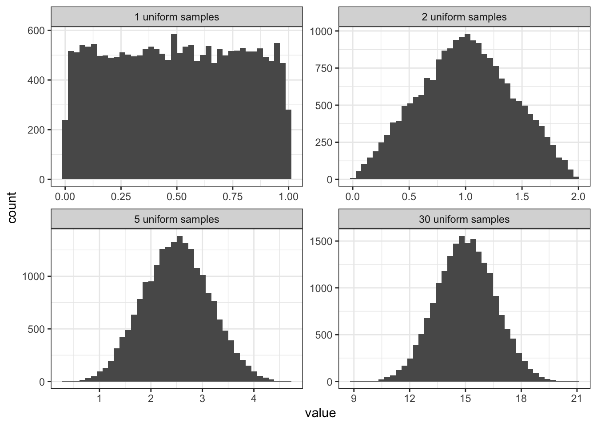
# Define number of samples and sample size
num_samples <- 20000
sample_size_1 <- 1
sample_size_2 <- 2
sample_size_3 <- 5
sample_size_4 <- 30
# Generate samples,
samples_1 <- replicate(n = num_samples, expr = rexp(sample_size_1, rate = 1))
samples_2 <- replicate(n = num_samples, expr = rexp(sample_size_2, rate = 1))
samples_3 <- replicate(n = num_samples, expr = rexp(sample_size_3, rate = 1))
samples_4 <- replicate(n = num_samples, expr = rexp(sample_size_4, rate = 1))
# Calculate sample sums
sample_sums_1 <- samples_1
sample_sums_2 <- colSums(samples_2)
sample_sums_3 <- colSums(samples_3)
sample_sums_4 <- colSums(samples_4)
# Convert to data frame for plotting
facet_names <- c(
sample_sums_1 = paste(sample_size_1, "exponential samples"),
sample_sums_2 = paste(sample_size_2, "exponential samples"),
sample_sums_3 = paste(sample_size_3, "exponential samples"),
sample_sums_4 = paste(sample_size_4, "exponential samples")
)
data.frame(sample_sums_1, sample_sums_2, sample_sums_3, sample_sums_4) %>%
pivot_longer(cols = 1:4) %>%
ggplot(aes(x = value))+
geom_histogram(bins = 40)+
facet_wrap(~name, scales = "free", labeller = as_labeller(facet_names))+
theme_bw()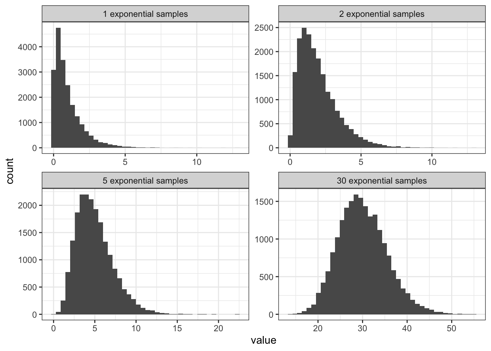
Note how the mean and the variance get larger the larger the sum gets.
Let’s imagine we want to build an OCR (Optical Character Recognition ti) system. For that, we count the number of black pixels for a given letter and call it \(x\). Let’s also imagine that there are only two letters a and b.
The a priori probability of a data points belonging to a particular class is called the class prior. This is the probability we assume before we see the observation. We can find this probability by counting. In the English language for example, we could count the number of times a specific letter appears. Let’s say we have the following data set: abaaa babaa aabba aaaaa
Now we get \[\begin{align*}
C_1 &= a \qquad p(C_1) = \frac{15}{20} = 0.75 \\
C_2 &= b \qquad p(C_2) = \frac{5}{20} = 0.25
\end{align*}\] All the probabilities have to sum up to 1, because we have to assign the data to one of the classes. \[ \sum_k p(C_k) = 1 \]
The class conditional is the likelihood of making an observation \(x\) given that it comes from some class \(C_k\). Remember that \(x\) is the number of black pixels in our example.

But now, instead of just checking which likelihood is bigger (for example \(p(x|b) > p(x|a)\) for \(x = 15\)), we also take into account the prior probability of observing a or b. To do so, we multiply the likelihood by the prior. For example, if the letter a makes up 99% of all letters, then we should be more inclined to classify a sample as a, even if the likelihood of observing a given \(x\) is (slightly) higher for b. We also add a normalizing term to the equation, so we get a probability distribution with a total area of 1. This is called Bayes’ Theorem: \[p(C_k|x) = \frac{p(x|C_k)p(C_k)}{p(x)} = \frac{p(x|C_k)p(C_k)}{\sum_j p(x|C_j)p(C_j)}\] which we can interpret as \[\text{Posterior} = \frac{\text{Likelihood} \cdot \text{Prior}}{\text{Normalization Factor}}\]
The goal here is to minimize the probability of misclassification or the probability of making a wrong decision: \[\begin{align*} p(\text{error}) &= p(x \in R_1, C_2) + p(x \in R_2, C_1) \\ &= \int_{R_1} p(x, C_2) dx + \int_{R_2} p(x, C_1) dx \\ &= \int_{R_1} p(x|C_2)p(C_2) dx + \int_{R_2} p(x|C_1)p(C_1) dx \end{align*}\]
Here, \(p(x \in R_1, C_2)\) is the probability of observing a sample \(x\) that lies in the region \(R_1\) where we should choose class \(C_1 = a\), but we choose \(C_2 = b\) instead.
We now can craft a optimal decision rule, where we decide for \(C_1\) if \[\begin{align*} p(C_1|x) &> p(C_2|x) \\ \frac{p(x|C_1)p(C_1)}{p(x)} &> \frac{p(x|C_2)p(C_2)}{p(x)} \\ p(x|C_1)p(C_1) &> p(x|C_2)p(C_2) \end{align*}\]
which results in the Likelihood Ratio Test (LRT): \[\frac{p(x|C_1)}{p(x|C_2)} > \frac{p(C_2)}{p(C_1)}\]
We can also use a loss function to minimize the risk of misclassification. The loss function \(L(C_k, C_j)\) is a measure of the loss incurred by deciding \(C_j\) when the true class is \(C_k\). This is especially relevant if the cost of misclassification is not the same for all classes. For example, it’s better to have a false alarm on a smoke detector than to miss a fire (asymmetric loss). We define a loss function \[\lambda(\alpha_i | C_j) = \lambda_{ij}\] where \(C_j\) is the actual class and \(\alpha_i\) is the decision. Now we can calculate the expected loss of making a decision \(\alpha_i\) \[\begin{align*} R(\alpha_i | x) &= \mathbb{E}_{C_k \sim p(C|x)}[\lambda(\alpha_i | C_k)] \\ &= \sum_j \lambda(\alpha_i | C_j) p(C_j | x) \end{align*}\]
Probability density estimation (PDE) is about finding the class conditional probability \(p(x|C_k)\).
There exist three models for PDE:
One of the easiest parametric models is the Gaussian distribution. It is defined by the mean \(\mu\) and the variance \(\sigma^2\). The probability density function is given by \[p(x|\theta) = p(x|\mu, \sigma) = \frac{1}{\sqrt{2\pi \sigma^2}} \exp\left(-\frac{(x-\mu)^2}{2\sigma^2}\right)\] For data \(x\) that is generated by this model, we write \(x \sim p(x|\theta)\).
Maximum Likelihood Estimation seeks the parameter \(\hat\theta\) which best explains the data \(\mathcal{D}\). The likelihood of observing some data \(\mathcal{D}\) given some parameters \(\theta\) can be written as \[\begin{align*} \mathcal{L}(\theta) &= p(\mathcal{D} | \theta) \\ &= p(x_1, … , x_N | \theta) \\ &= p(x_1 | \theta) \cdot … \cdot p(x_n | \theta) \qquad \text{assumption: data is i.i.d.} \\ &= \prod_{n=1}^{N} p(x_n | \theta) \end{align*}\] which is transformed using the logarithm most of the time, as the logarithm does not change the position of \(\hat\theta\) and turns the product into a sum: \[\begin{align*} \ln\mathcal{L}(\theta) &= \ln \prod_{n=1}^{N} p(x_n | \theta) \\ &= \sum_{n=1}^{N} \ln p(x_n | \theta) \end{align*}\] This has mostly numerical advantages, as a product of small values can get very very small really really fast and cause issues for the computer.
This approach breaks down if the data set contains only one single data point, e.g. \(\mathcal{D} = \{x_1\}\). Then, the mean equals the data point and the variance becomes zero.
…
Non-parametric models are useful if the underlying probability density distribution family is unknown. They are directly estimated from data, without an explicit parametric model. Every data point is a parameter, so non-parametric models have an uncertain and possibly infinite number of parameters. The biggest problem with most estimation models is the “too smooth vs. not smooth enough” problem.
mean1 <- 2
std1 <- 1
mean2 <- -3
std2 <- 2
set.seed(0)
n_samples <- 500
data1 <- rnorm(n_samples/2, mean = mean1, sd = std1)
data2 <- rnorm(n_samples/2, mean = mean2, sd = std2)
data <- c(data1, data2)
#head(data)
data.frame(data) %>%
ggplot(aes(x = data)) +
geom_density() +
labs(x = "Value", y = "Density")+
theme_bw()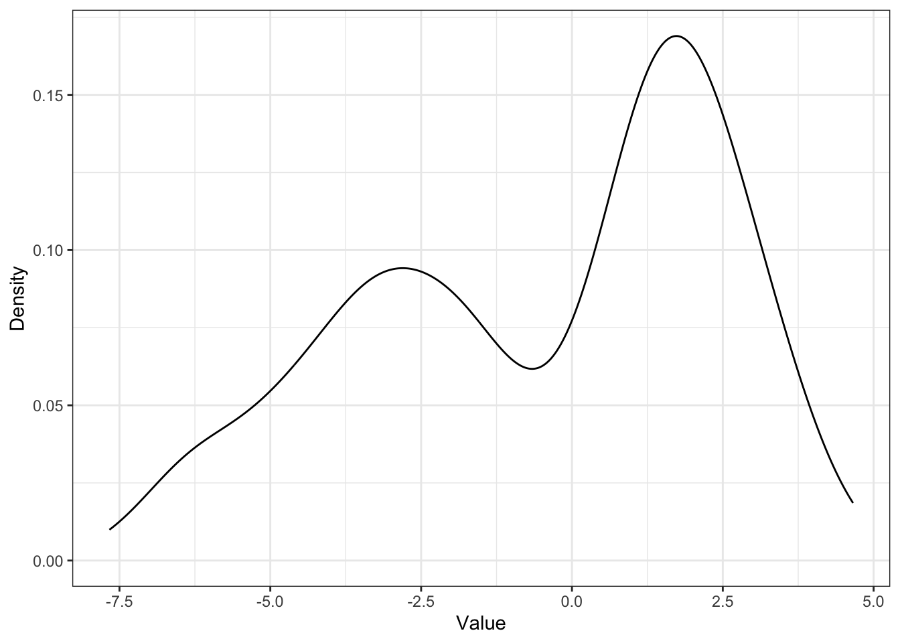
data.frame(data) %>%
ggplot(aes(x = data)) +
geom_histogram(binwidth = .5) +
labs(x = "Value", y = "Density")+
theme_bw()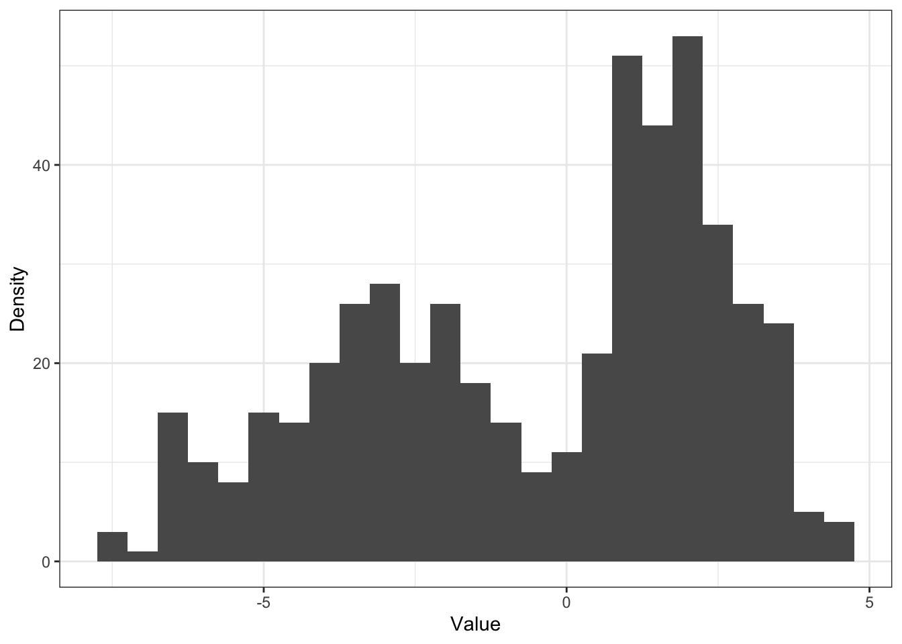
The problem with histograms is, that for higher dimensions, the number of needed bins increases drastically. For \(D\) dimensions, we need \(N^D\) bins.
The idea behind kernel density estimation is to put a kernel upon each observation \(\mathbf{x}_n\) and then to sum up those kernels: \[ p(\mathbf{x}) \approx \frac{K}{NV} = \frac{1}{Nh^d} \sum_{n=1}^N k(\mathbf{x} - \mathbf{x{_n}}) \] where \(k\) is the kernel function, for example the Gaussian.
example_data <- c(1, 5, 6)
density_df <- data.frame(
x = seq(from = -2, to = 8, by = .01),
sapply(example_data, function(m) dnorm(seq(from = -2, to = 8, by = .01), mean = m, sd = 1))
) %>%
pivot_longer(cols = X1:X3)
density_df_sum <- density_df %>%
group_by(x) %>%
summarise(value = sum(value))
ggplot() +
geom_point(data = data.frame(x = example_data), aes(x = x, y = 0)) +
geom_line(data = density_df, aes(x = x, y = value, color = name))+
geom_line(data = density_df_sum, aes(x = x, y = value))+
#geom_density(data = data.frame(x = example_data), aes(x = x), bw = 1)+ # zum Vergleich
coord_cartesian(xlim = c(-2, 8))+
theme_bw()+
theme(legend.position = "none")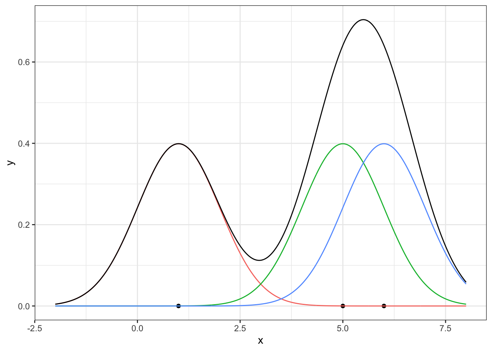
Here, three Gaussians have been put on top of the three data points (red, green, blue) and then summed up (black). Now, it only has to be scaled down so the area under the curve is equal to 1 and thus a valid probability density function.
# Estimate the total area under the curve
total_area <- sum(density_df_sum$value) * .01
# Scale down the summed density by the total area
density_df_sum_scaled <- density_df_sum %>%
mutate(value = value / total_area)
ggplot() +
geom_point(data = data.frame(x = example_data), aes(x = x, y = 0)) +
#geom_line(data = density_df, aes(x = x, y = value, color = name))+
geom_line(data = density_df_sum_scaled, aes(x = x, y = value))+
#geom_density(data = data.frame(x = example_data), aes(x = x), bw = 1, linetype = "dashed", color = "red")+ #zum Vergleich
coord_cartesian(xlim = c(-2, 8))+
theme_bw()+
theme(legend.position = "none")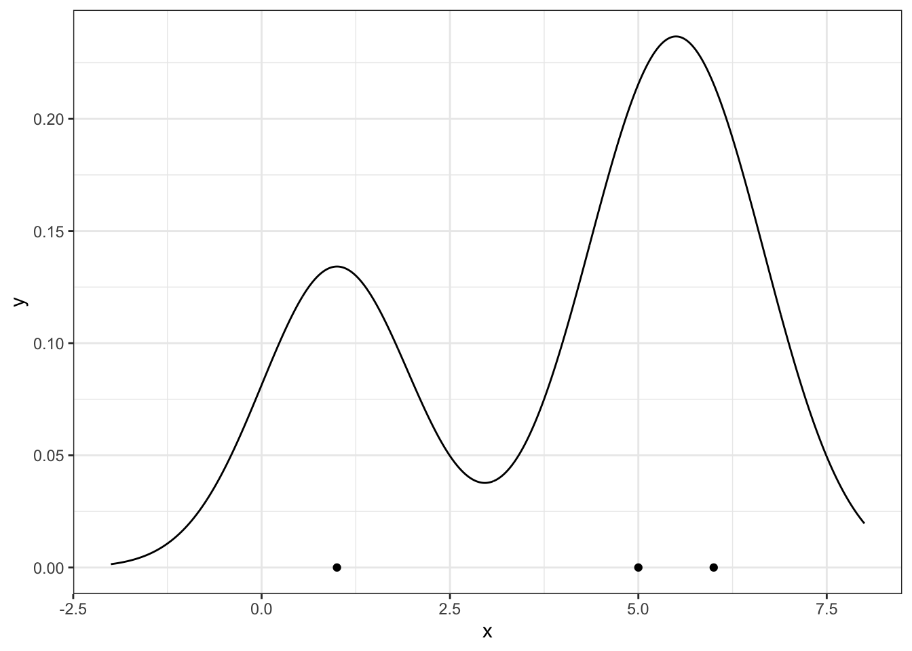
Different functions can be chosen as the kernel
kernels <- c("rectangular", "triangular", "gaussian", "biweight")
data_sample <- data.frame(data) %>%
slice_head(n = 5)
p1 <- data_sample %>%
ggplot(aes(x = data)) +
geom_density(kernel = "rectangular", bw = .1) +
geom_point(aes(x = data, y = 0))+
labs(x = "", y = "", title = "rectangular")+
theme_bw()
p2 <- data_sample %>%
ggplot(aes(x = data)) +
geom_density(kernel = "triangular", bw = .1) +
geom_point(aes(x = data, y = 0))+
labs(x = "", y = "", title = "triangular")+
theme_bw()
p3 <- data_sample %>%
ggplot(aes(x = data)) +
geom_density(kernel = "gaussian", bw = .1) +
geom_point(aes(x = data, y = 0))+
labs(x = "", y = "", title = "gaussian")+
theme_bw()
p4 <- data_sample %>%
ggplot(aes(x = data)) +
geom_density(kernel = "biweight", bw = .1) +
geom_point(aes(x = data, y = 0))+
labs(x = "", y = "", title = "biweight")+
theme_bw()
ggarrange(p1, p2, p3, p4)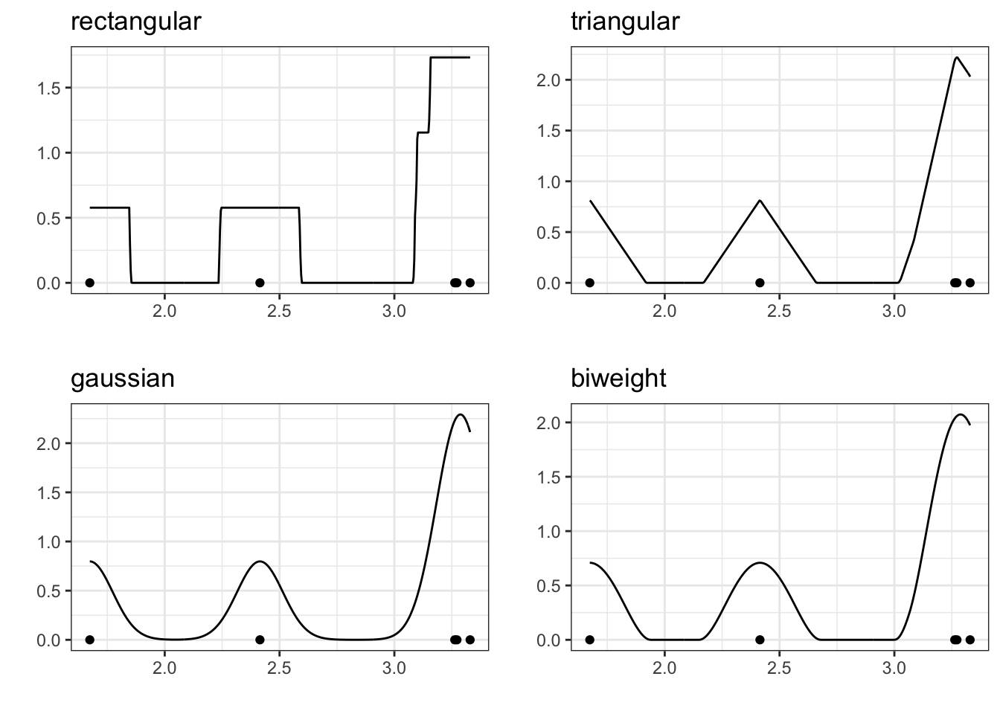
But the choice does not matter much for larger samples
kernels <- c("rectangular", "triangular", "gaussian", "biweight")
data_sample <- data.frame(data) %>%
slice_head(n = 500)
p1 <- data_sample %>%
ggplot(aes(x = data)) +
geom_density(kernel = "rectangular", bw = .1) +
geom_point(aes(x = data, y = 0), alpha = .1)+
labs(x = "", y = "", title = "rectangular")+
theme_bw()
p2 <- data_sample %>%
ggplot(aes(x = data)) +
geom_density(kernel = "triangular", bw = .1) +
geom_point(aes(x = data, y = 0), alpha = .1)+
labs(x = "", y = "", title = "triangular")+
theme_bw()
p3 <- data_sample %>%
ggplot(aes(x = data)) +
geom_density(kernel = "gaussian", bw = .1) +
geom_point(aes(x = data, y = 0), alpha = .1)+
labs(x = "", y = "", title = "gaussian")+
theme_bw()
p4 <- data_sample %>%
ggplot(aes(x = data)) +
geom_density(kernel = "biweight", bw = .1) +
geom_point(aes(x = data, y = 0), alpha = .1)+
labs(x = "", y = "", title = "biweight")+
theme_bw()
ggarrange(p1, p2, p3, p4)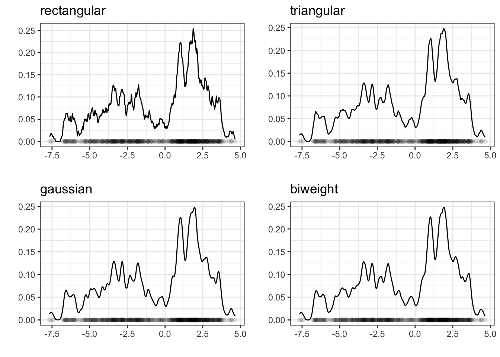
What does matter however, is the bandwidth! In the case of the Gaussian kernel, the bandwidth is the standard deviation.
kernels <- c("rectangular", "triangular", "gaussian", "biweight")
data_sample <- data.frame(data) %>%
slice_head(n = 500)
data_sample %>%
ggplot(aes(x = data)) +
geom_density(aes(color = "0.1"), kernel = "gaussian", bw = .1) +
geom_density(aes(color = "0.5"), kernel = "gaussian", bw = .5) +
geom_density(aes(color = "3"), kernel = "gaussian", bw = 3) +
geom_point(aes(x = data, y = 0), alpha = .2)+
labs(x = "", y = "")+
theme_bw() +
scale_color_manual(values = c("0.1" = "blue", "0.5" = "red", "3" = "darkgreen"),
labels = c("Bandwidth = 0.1", "Bandwidth = 0.5", "Bandwidth = 3"),
guide = guide_legend(title = ""))+
theme(legend.position = "top")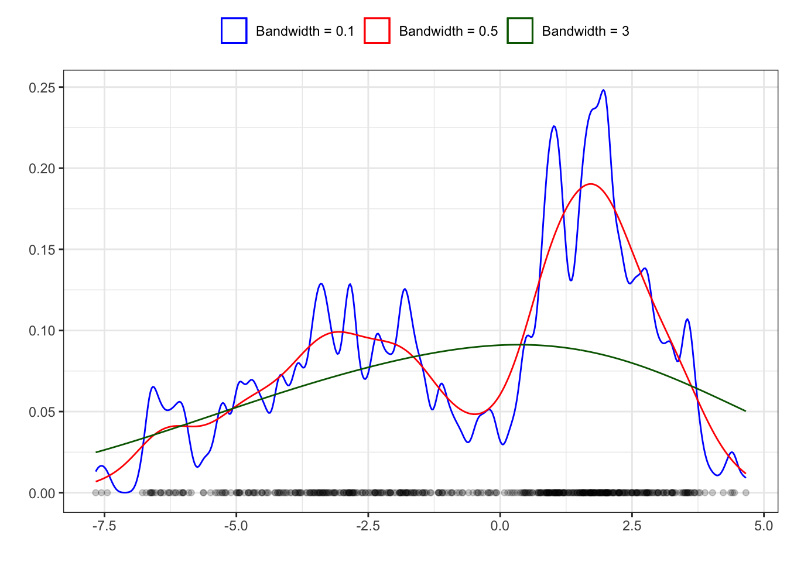
The red line seems to be about right, while the blue line shows over fitting with a too high variance and the green line shows under fitting with a too high bias (bias-vs-variance trade off).
All the above examples were in the 1d case. Now let’s take a look at how KDE looks with two dimensions
n <- 1000
mu1 <- c(2, 4)
Sigma1 <- rbind(
c(1, 0),
c(0, 2)
)
mu2 <- c(5, 0)
Sigma2 <- rbind(
c(3, 1),
c(.9, 2)
)
data_2d <- rbind(mvrnorm(n/2, mu1, Sigma1), mvrnorm(n/2, mu2, Sigma2))
p1 <- data.frame(data_2d) %>%
ggplot(aes(x = X1, y = X2))+
geom_point(alpha = .5)+
theme_bw()+
theme(legend.position = "none")
p2 <- data.frame(data_2d) %>%
ggplot(aes(x = X1, y = X2))+
geom_density_2d()+
theme_bw()+
theme(legend.position = "none")
ggarrange(p1, p2, nrow = 1)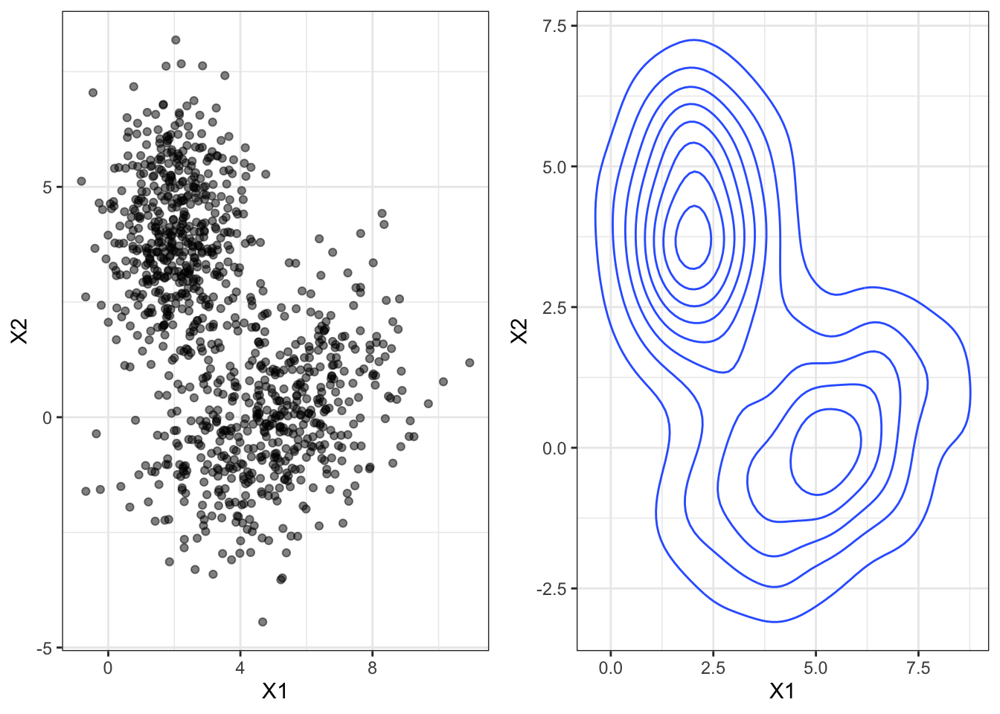
Again, the bandwidth matters a lot!
p1 <- data.frame(data_2d) %>%
ggplot(aes(x = X1, y = X2))+
geom_density_2d(h = 1)+
theme_bw()+
theme(legend.position = "none")+
labs(subtitle = "h = 1")
p2 <- data.frame(data_2d) %>%
ggplot(aes(x = X1, y = X2))+
geom_density_2d(h = 2)+
theme_bw()+
theme(legend.position = "none")+
labs(subtitle = "h = 2")
ggarrange(p1, p2, nrow = 1)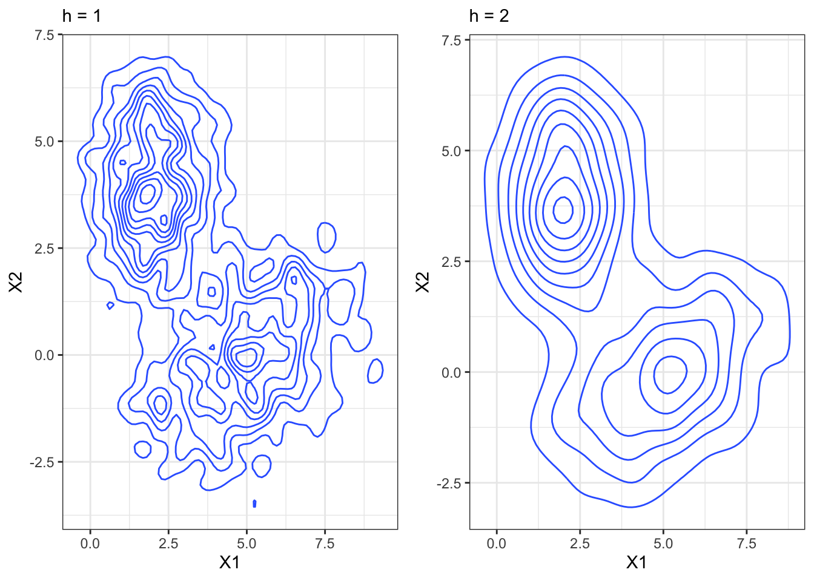
In \(d\) Dimensions, the bandwidth is a vector of length \(d\).
The K-nearest neighbors approach calculates the distance from a point \(x\) to every point in the data set. It then sorts the neighbors by distance and checks the k’th distance. The higher the distance from point \(x\) to its k’th neighbor, the lower the density and vice versa.
#head(data)
# Define the number of neighbors
k <- 100
# Define the points at which to estimate the density
x_points <- seq(min(data), max(data), by = 0.01)
# For each point, calculate the distance to the kth nearest neighbor in the data
kth_distances <- sapply(x_points, function(x) sort(abs(data - x))[k])
# The estimated density is k divided by the total number of data points times the kth distance
density_estimates <- k / (length(data) * kth_distances)
density_estimates_normalized <- density_estimates / (sum(density_estimates) * 0.01)
# Plot the estimated density
data.frame(x = x_points, y = density_estimates_normalized) %>%
ggplot()+
geom_line(aes(x = x, y = y))+
geom_density(data = data.frame(data), aes(x = data))+
geom_point(data = data.frame(data), aes(x = data, y = 0), alpha = .1)+
theme_bw()+
labs(y = "")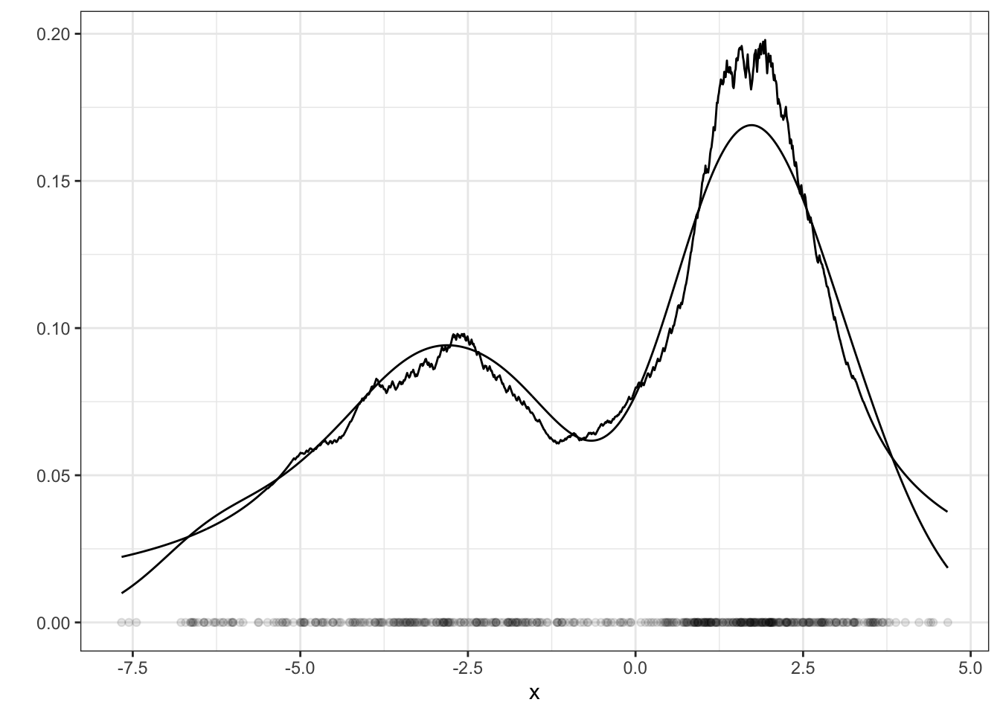
Instead of the bandwidth in KDE, with KNN we need to specify how many neighbors we want to take into consideration. The above example used \(k=100\) neighbors.
For multi-dimensional data, we have to decide on how to measure distance. The most popular distance measure is the euclidean distance, calculated by \[ d(p, q) = \|q-p\|_2=\sqrt{(q_1-p_1)^2+…+(q_n-p_n)^2}=\sqrt{\sum_{i=1}^n(q_i-p_i)^2} \] which is equal to the Pythagoras theorem for \(n=2\) (2 dimensions). Other distance measures are the Manhattan distance (distance in a grid) or the Chebyshev distance (greatest distance along any coordinate dimension).
#head(data_2d)
# Define the number of neighbors
k <- 100
# Define the points at which to estimate the density
xy_points <- expand.grid(seq(min(data_2d[,1]), max(data_2d[,1]), by = 0.1),
seq(min(data_2d[,2]), max(data_2d[,2]), by = 0.1)) %>%
as.matrix()
# For each point, calculate the distance to the kth nearest neighbor in the data
kth_distances <- apply(xy_points, 1, function(x) {
distances <- sqrt(rowSums((t(t(data_2d) - x))^2))
sort(distances)[k]
})
# The estimated density is k divided by the total number of data points times the kth distance
density_estimates <- k / (length(data_2d) * kth_distances)
density_estimates_normalized <- density_estimates / (sum(density_estimates) * 0.01)
# Plotting
p1 <- data.frame(data_2d) %>%
ggplot(aes(x = X1, y = X2))+
geom_point(alpha = .5)+
theme_bw()+
theme(legend.position = "none")
p2 <- data.frame(xy_points, density_estimates_normalized) %>%
ggplot(aes(x = Var1, y = Var2, fill = density_estimates_normalized))+
geom_raster()+
scale_fill_viridis()+
theme_bw()+
theme(legend.position = "none")+
labs(x = "X1", y = "X2")
ggarrange(p1, p2, nrow = 1)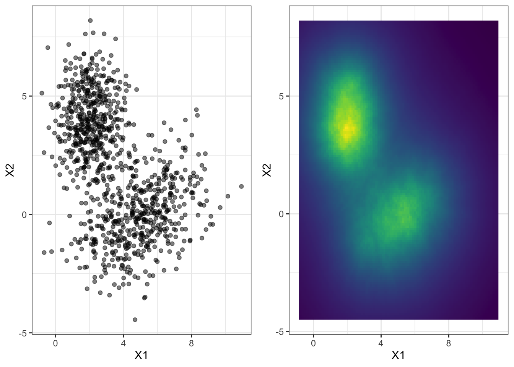
Let’s first take a step back and compare parametric and nonparametric models:
| Parametric models | Nonparametric models |
|---|---|
| Gaussian, … | KDE, kNN, … |
| Good analytic properties | General |
| Small memory requirements | Large memory requirements |
| Fast | Slow |
Mixture models now can have the advantages of both model classes!
An example of an “easy” mixture model is the sum of multiple Gaussian distributions. \[p(x) = \sum_{j=1}^M p(x | z_j) \cdot p(z_j)\] where \(m\) is the number of clusters, \(p(x|z_j)\) the probability of \(x\) given it’s in cluster \(j\) and \(p(z_j)\) the probability of cluster \(j\) (prior).
x <- seq(from = -5, to = 15, by = 0.01)
prior_g1 <- 0.3
prior_g2 <- 0.2
prior_g3 <- 0.5
g1 <- dnorm(x, mean = 0, sd = 1) * prior_g1
g2 <- dnorm(x, mean = 4, sd = 3) * prior_g2
g3 <- dnorm(x, mean = 10, sd = 2) * prior_g3
g <- g1 + g2 + g3
data.frame(x, g1, g2, g3, g) %>%
pivot_longer(cols = g1:g3) %>%
ggplot()+
geom_line(aes(x = x, y = value, color = name))+
geom_line(aes(x = x, y = g))+
theme_bw()+
theme(legend.position = "none")+
labs(x = "x", y = "p(x)")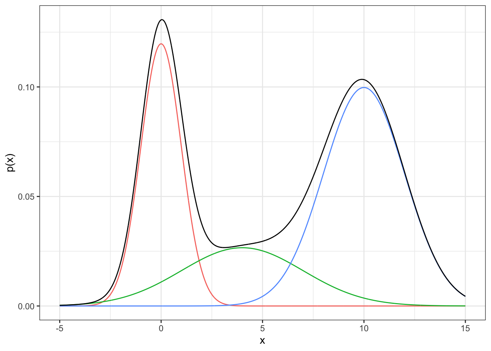
Now the question is, how can one estimate a mixture model based on some data like the following, where we have drawn samples from the above mixture distribution.
n <- 1000
d1 <- rnorm(n/3, mean = 0, sd = 1)
d2 <- rnorm(n/3, mean = 3, sd = 3)
d3 <- rnorm(n/3, mean = 10, sd = 2)
d <- c(d1, d2, d3)
data.frame(x = d) %>%
ggplot()+
geom_point(aes(x = x, y = 0), alpha = .1)+
theme_bw()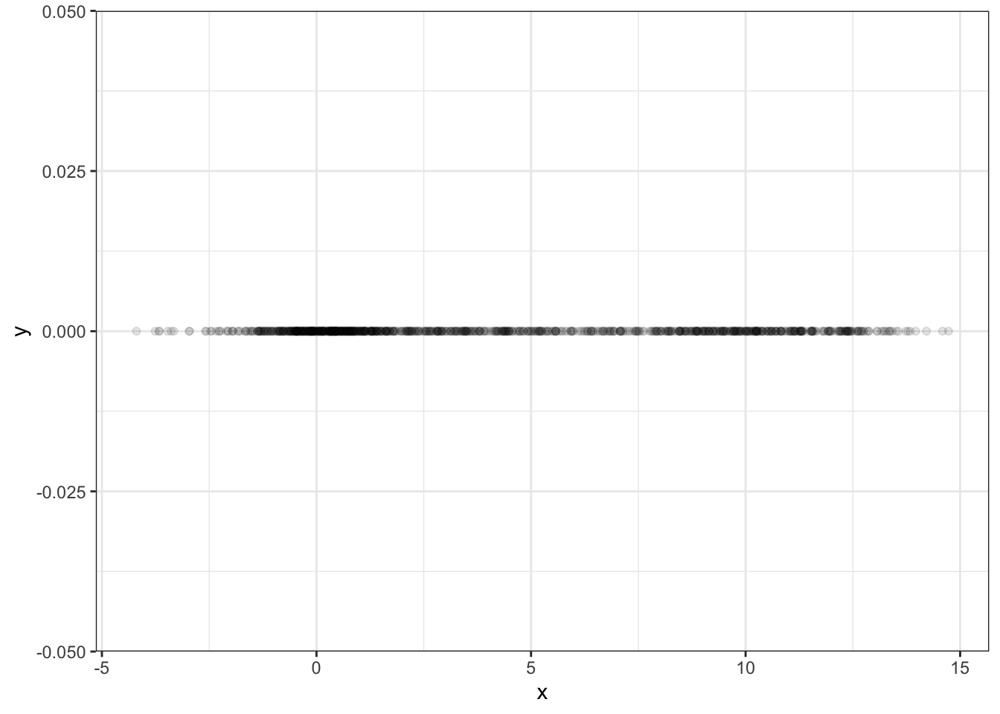
One could try to solve such find the parameters of such a model using Maximum Likelihood. But a better way is presented in the section on the EM algorithm.
Clustering is a type of unsupervised learning where all data points are unlabeled. The objective is therefore to find groups of similar x values in the data space (can be one-dimensional or multi-dimensional) and associate these with a discrete set of clusters. And there lies one of the hardest problems already: How should one decide on the number of clusters?
Let’s use the famous iris data set, which contains 150 data points with 4 measurements of the petal (deutsch: Blütenblatt) and sepal (deutsch: Kelchblatt) as well as a label for the species.
iris <- read_csv("https://gist.githubusercontent.com/netj/8836201/raw/6f9306ad21398ea43cba4f7d537619d0e07d5ae3/iris.csv")
iris %>%
ggplot(aes(x = petal.length, y = petal.width, color = variety))+
geom_point()+
theme_bw()+
theme(legend.position = "top")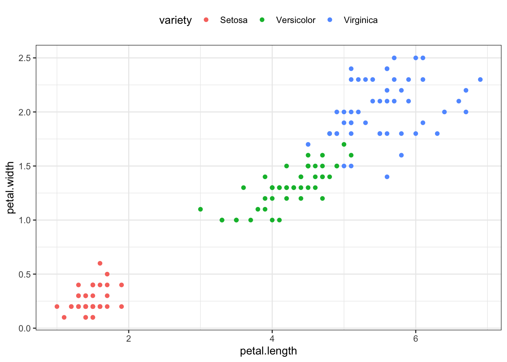
K-Means optimizes the following objective function \[J = \sum_{n=1}^N \sum_{k=1}^K r_{nk} \|\mathbf{x}_n - \mathbf{\mu}_k\|^2\] where \(r_{nk}\) is an indicator variable that checks whether \(\mathbf{\mu}_k\) is the nearest cluster center to point \(\mathbf{x}_n\) \[ r_{nk} = \begin{cases} 1 \qquad , \text{if } k = \text{arg min}_j \|\mathbf{x}_n - \mathbf{\mu}_k\|^2 \\ 0 \qquad , \text{otherwise} \end{cases} \]
Or a bit less formal:
n_clusters <- 3
max_iter <- 20
# Function to calculate euclidean distance
euclidean_dist <- function(a, b) sqrt(sum((a - b)^2))
iris_matrix <- as.matrix(iris[,3:4])
# Randomly select initial centroids
set.seed(8)
#centroids <- array(dim = c(n_clusters,2, max_iter))
#centroids[,,1] <- iris_matrix[sample(nrow(iris_matrix), n_clusters), ]
centroids <- iris_matrix[sample(nrow(iris_matrix), n_clusters), ]
# Create a variable to store cluster assignments
cluster_assignment <- rep(1, nrow(iris_matrix))
old_cluster_assignment <- matrix(nrow = nrow(iris), ncol = max_iter)
for(iter in 1:max_iter) {
#print(iter)
# Old cluster assignments
old_cluster_assignment[,iter] <- cluster_assignment
# Assign each point to the closest centroid
for (i in 1:nrow(iris_matrix)) {
distances <- sapply(1:n_clusters, function(j) euclidean_dist(iris_matrix[i, ], centroids[j, ]))
cluster_assignment[i] <- which.min(distances)
}
# Update centroids
for (j in 1:n_clusters) {
points_in_cluster <- iris_matrix[cluster_assignment == j, ]
if (nrow(points_in_cluster) > 0)
centroids[j, ] <- colMeans(points_in_cluster)
}
# If no point's assignment has changed, we're done
if (all(cluster_assignment == old_cluster_assignment[,iter])) {
cluster_assignment <- old_cluster_assignment[,1:iter]
break
}
}
cluster_assignment_df <- as.data.frame(cluster_assignment) %>%
mutate(i = 1:nrow(.)) %>%
pivot_longer(cols = -i, names_to = "iteration", values_to = "cluster") %>%
mutate(iteration = as.numeric(str_extract(iteration, "\\d+")))
iris %>%
mutate(i = 1:nrow(.)) %>%
left_join(cluster_assignment_df, by = join_by(i)) %>%
ggplot(aes(x = petal.length, y = petal.width, color = as.character(cluster)))+
geom_point()+
facet_wrap(~iteration)+
theme_bw()+
theme(legend.position = "top")+
labs(color = "assigned cluster")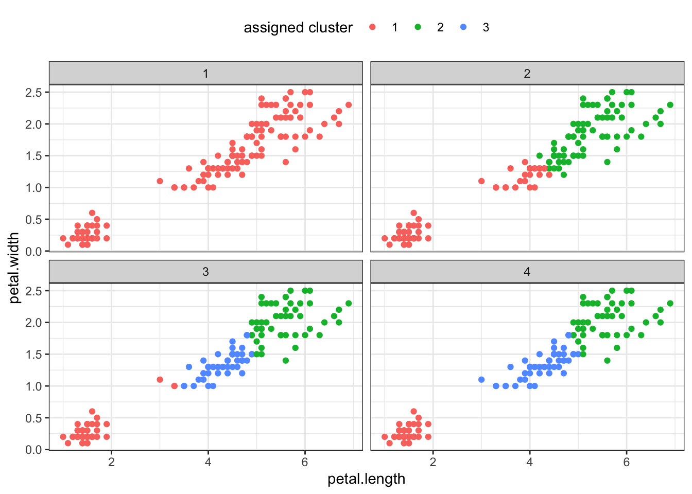
| Strengths | Weaknesses |
|---|---|
| Simple and fast to compute | Problem of finding suitable k |
| Guaranteed to converge | Sensitive to initial centers and outliers |
| Only spherical clusters | |
| Converges only to local optimum |
For the EM algorithm, the assumption is that the data is generated by an underlying probability distribution which is a Gaussian mixture model. We now cluster using soft assignments, that means we assign each data point a probability of belonging to a cluster. But one after the other.
Let’s start with a simple 1d data set that is generated by two Gaussian \(N(\mu_1 = 0,\sigma_1 = 3)\) and \(N(\mu_2 = 10,\sigma_2 = 1)\).
set.seed(1)
n <- 100
x1 <- rnorm(n/2, mean = 0, sd = 3)
x2 <- rnorm(n/2, mean = 10, sd = 1)
x <- c(x1, x2)
data.frame(x) %>%
ggplot(aes(x = x, y = 0))+
geom_point(alpha = .5)+
theme_bw()+
labs(y = "")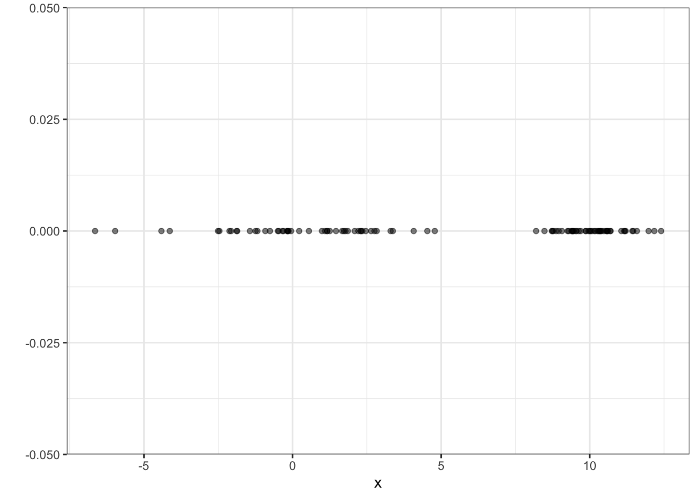
As with k-means, we need to specify the number of clusters or in this case the number of Gaussians. Let’s (correctly) assume \(k = 2\).
We first initialize the mean and the variance of the two Gaussians (red and blue) randomly. Here, we choose -1 and 1 as the means and 1 as the standard deviation.
set.seed(1)
mu_blue <- -1
sigma_blue <- 1
mu_red <- 1
sigma_red <- 1
x_seq <- seq(from = min(x), to = max(x), by = 0.01)
g_blue <- dnorm(x_seq, mean = mu_blue, sd = sigma_blue)
g_red <- dnorm(x_seq, mean = mu_red, sd = sigma_red)
ggplot()+
geom_area(data = data.frame(x_seq, g_blue), aes(x = x_seq, y = g_blue), color = "blue", fill = "blue", alpha = .3)+
geom_area(data = data.frame(x_seq, g_red), aes(x = x_seq, y = g_red), color = "red", fill = "red", alpha = .3)+
geom_point(data = data.frame(x), aes(x = x, y = 0), alpha = .5)+
theme_bw()+
labs(x = "x", y = "")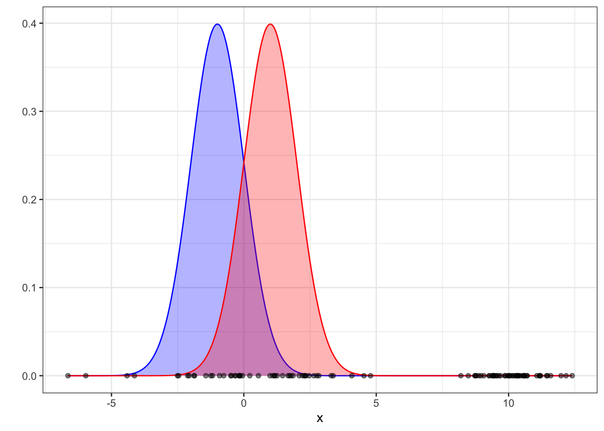
Now we calculate how likely each data point is to belong to the red Gaussian. Because we know the probability of \(x_i\) being generated by the red Gaussian \[ p(x_i | \text{red}) = \frac{1}{\sqrt{2\pi\sigma_\text{red}^2}}\exp \left( - \frac{(x_i-\mu_\text{red})^2}{2\sigma_\text{red}^2} \right) \] we can calculate the probability of \(x_i\) belonging to the red Gaussian \[ p(\text{red}|x_i)= \frac{p(x_i|\text{red}) \cdot p(\text{red})}{p(x_i|\text{red}) \cdot p(\text{red}) + p(x_i|\text{blue}) \cdot p(\text{blue})} \] This is the expectation step.
If we don’t know the priors, we can just divide them evenly, so \(p(\text{red}) = p(\text{blue}) = \frac{1}{k} = 0.5\).
prior_blue <- .5
prior_red <- .5
prob_red <- (dnorm(x, mean = mu_red, sd = sigma_red) * prior_red) / ((dnorm(x, mean = mu_red, sd = sigma_red) * prior_red) + (dnorm(x, mean = mu_blue, sd = sigma_blue) * prior_blue))
prob_blue <- (dnorm(x, mean = mu_blue, sd = sigma_blue) * prior_blue) / ((dnorm(x, mean = mu_red, sd = sigma_red) * prior_red) + (dnorm(x, mean = mu_blue, sd = sigma_blue) * prior_blue))
ggplot()+
geom_area(data = data.frame(x_seq, g_blue), aes(x = x_seq, y = g_blue), color = "blue", fill = "blue", alpha = .3)+
geom_area(data = data.frame(x_seq, g_red), aes(x = x_seq, y = g_red), color = "red", fill = "red", alpha = .3)+
geom_point(data = data.frame(x, prob_blue, prob_red), aes(x = x, y = 0, color = prob_red))+
theme_bw()+
scale_color_gradient(low = "blue", high = "red")+
theme(legend.position = "top")+
labs(color = "Prob. red", x = "x", y = "")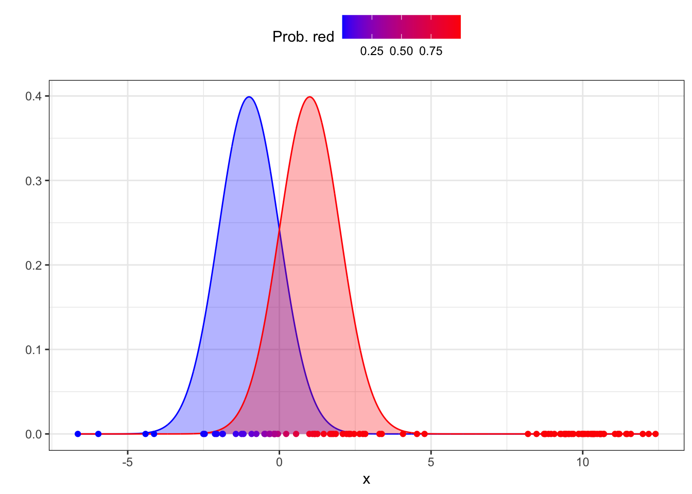
Now we can update the priors, means and variances in the maximization step. The updated prior for a class is the average probability of all data points belonging to that class. \[ p(\text{red})^\text{new} = \frac{1}{N} \sum_{i=1}^N p(\text{red}|x_i) \] The updated mean is a simple average of all x-values weighted by the probability of belonging to the Gaussian. \[ \mu_\text{red}^\text{new} = \frac{\sum_{i=1}^N p(\text{red}|x_i) \cdot x_i}{\sum_{i=1}^N p(\text{red}|x_i)} \] The updated standard deviation is the square root of the average of the squared differences from the mean for all data points, where each difference is weighted by the probability of the data point belonging to the class. \[ \sigma_\text{red}^\text{new} = \frac{\sqrt{\sum_{i=1}^N p(\text{red}|x_i) \cdot (x_i - \mu_\text{red})^2}}{\sum_{i=1}^N p(\text{red}|x_i)} \]
prior_red <- sum(prob_red) / length(x)
prior_blue <- sum(prob_blue) / length(x)
mu_red <- sum(prob_red * x) / sum(prob_red)
mu_blue <- sum(prob_blue * x) / sum(prob_blue)
sigma_red <- sqrt(sum(prob_red * (x - mu_red)^2) / sum(prob_red))
sigma_blue <- sqrt(sum(prob_blue * (x - mu_blue)^2) / sum(prob_blue))
x_seq <- seq(from = min(x), to = max(x), by = 0.01)
g_blue <- dnorm(x_seq, mean = mu_blue, sd = sigma_blue)
g_red <- dnorm(x_seq, mean = mu_red, sd = sigma_red)
ggplot()+
geom_area(data = data.frame(x_seq, g_blue), aes(x = x_seq, y = g_blue), color = "blue", fill = "blue", alpha = .3)+
geom_area(data = data.frame(x_seq, g_red), aes(x = x_seq, y = g_red), color = "red", fill = "red", alpha = .3)+
geom_point(data = data.frame(x), aes(x = x, y = 0), alpha = .5)+
theme_bw()+
labs(x = "x", y = "")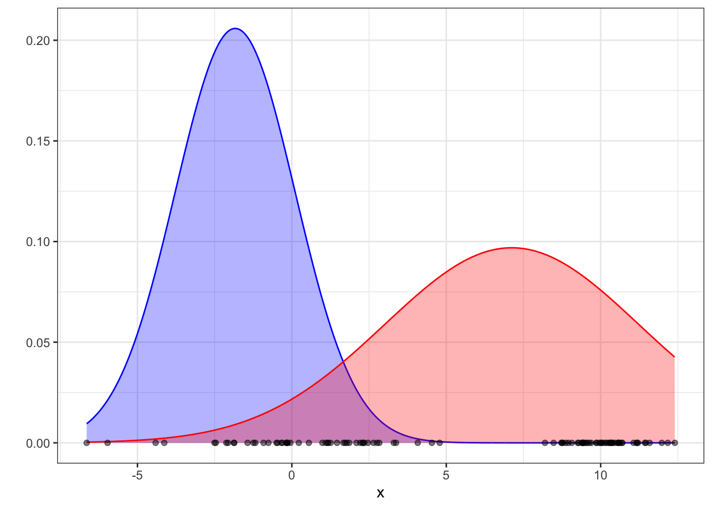
Great! Now let’s run the algorithm till convergence.
mu_blue <- -1
sigma_blue <- 1
mu_red <- 1
sigma_red <- 1
prior_red <- .5
prior_red <- .5
tolerance <- 1e-8
change <- Inf
max_iter <- 100
for (iter in 1:max_iter) {
old_mu_red <- mu_red
old_mu_blue <- mu_blue
old_sigma_red <- sigma_red
old_sigma_blue <- sigma_blue
# E-step
prob_red <- (dnorm(x, mean = mu_red, sd = sigma_red) * prior_red) / ((dnorm(x, mean = mu_red, sd = sigma_red) * prior_red) + (dnorm(x, mean = mu_blue, sd = sigma_blue) * prior_blue))
prob_blue <- (dnorm(x, mean = mu_blue, sd = sigma_blue) * prior_blue) / ((dnorm(x, mean = mu_red, sd = sigma_red) * prior_red) + (dnorm(x, mean = mu_blue, sd = sigma_blue) * prior_blue))
# M-step
prior_red <- sum(prob_red) / length(x)
prior_blue <- sum(prob_blue) / length(x)
mu_red <- sum(prob_red * x) / sum(prob_red)
mu_blue <- sum(prob_blue * x) / sum(prob_blue)
sigma_red <- sqrt(sum(prob_red * (x - mu_red)^2) / sum(prob_red))
sigma_blue <- sqrt(sum(prob_blue * (x - mu_blue)^2) / sum(prob_blue))
# Calculate change in parameters
change <- max(abs(c(old_mu_red - mu_red, old_mu_blue - mu_blue, old_sigma_red - sigma_red, old_sigma_blue - sigma_blue)))
if(change < tolerance) break
}
x_seq <- seq(from = min(x), to = max(x), by = 0.01)
g_blue <- dnorm(x_seq, mean = mu_blue, sd = sigma_blue)
g_red <- dnorm(x_seq, mean = mu_red, sd = sigma_red)
ggplot()+
geom_area(data = data.frame(x_seq, g_blue), aes(x = x_seq, y = g_blue), color = "blue", fill = "blue", alpha = .3)+
geom_area(data = data.frame(x_seq, g_red), aes(x = x_seq, y = g_red), color = "red", fill = "red", alpha = .3)+
geom_point(data = data.frame(x, prob_red), aes(x = x, y = 0, color = prob_red), alpha = .5)+
scale_color_gradient(low = "blue", high = "red")+
theme_bw()+
labs(x = "x", y = "")+
theme(legend.position = "none")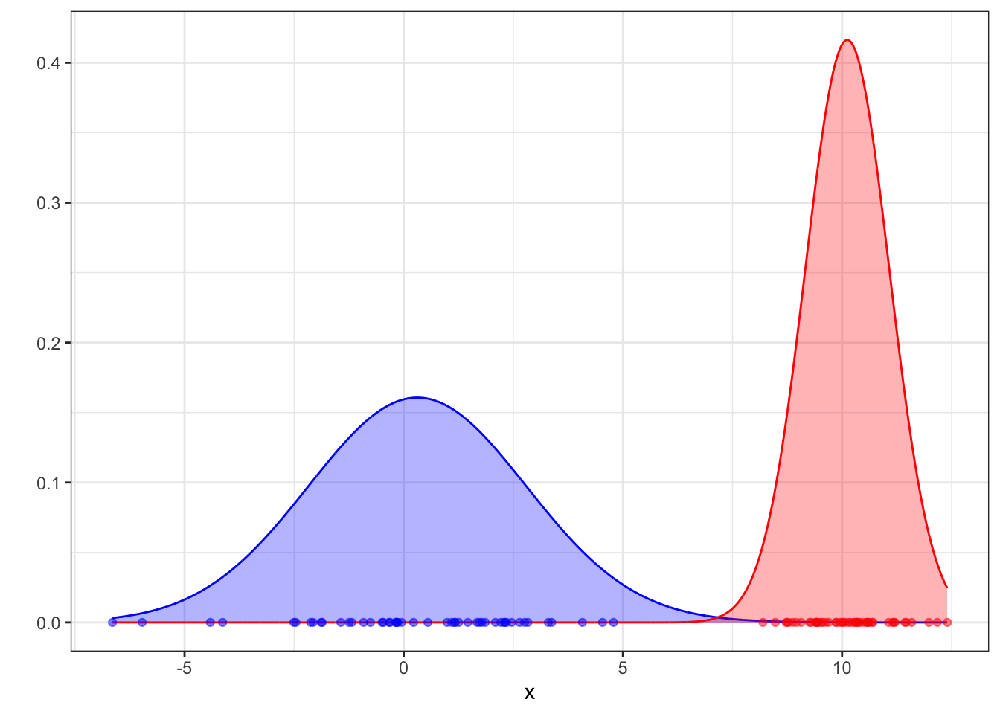
The algorithm converges after 18 iterations and correctly finds the two Gaussians.
| Strengths | Weaknesses |
|---|---|
| Probabilistic interpretation | Problem of finding suitable k |
| Soft assignments | Sensitive to initialization |
| Can predict new data points | Computationally expensive |
| Converges only to local optimum |
Mean shift is a method for finding modes in a cloud of data points. To be more precise, it tries to find the modes of a kernel density estimate through local search
#iris <- read_csv("https://gist.githubusercontent.com/netj/8836201/raw/6f9306ad21398ea43cba4f7d537619d0e07d5ae3/iris.csv")
iris %>%
ggplot(aes(x = petal.length, y = petal.width, color = variety))+
geom_point()+
theme_bw()+
theme(legend.position = "top")iris_matrix <- as.matrix(iris[, 1:4])iris_cluster <- meanShift(iris_matrix)
data.frame(iris, cluster = iris_cluster$assignment) %>%
ggplot(aes(x = petal.length, y = petal.width, color = as.character(cluster)))+
geom_point()+
theme_bw()+
theme(legend.position = "top")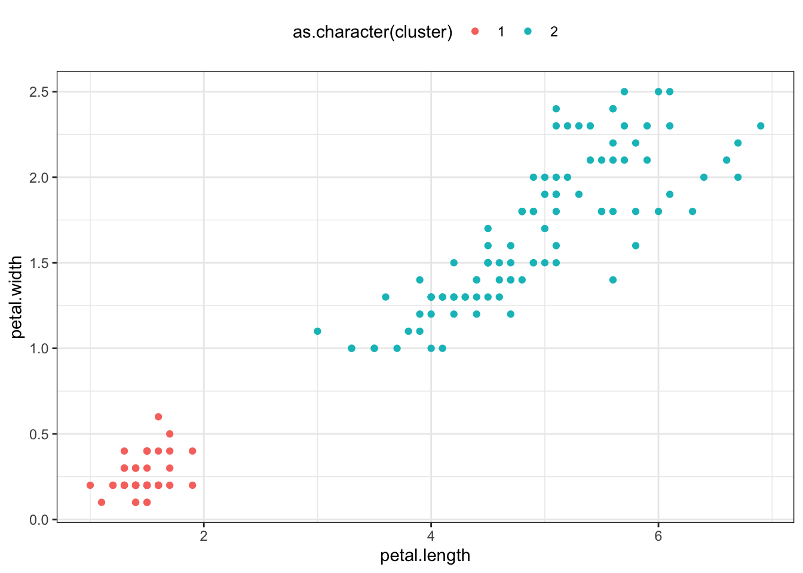
TODO
TODO
The goal of Linear Discriminant Analysis (LDA) is to find a linear combination of features (vector \(\mathbf{w}\)) that effectively separates or characterizes two or more classes of objects or events. It aims to reduce dimensionality while preserving as much of the class discriminatory information as possible.
\[ \text{max}_\mathbf{w}J(\mathbf{w}) = \frac{(m_1 - m_2)^2}{s_1^2 + s_2^2} = \frac{\mathbf{w}^T\mathbf{S}_B\mathbf{w}}{\mathbf{w}^T\mathbf{S}_W\mathbf{w}} \]
In this formula, \(m_1 = \mathbf{w}^T\mathbf{m}_1\) and \(m_2 = \mathbf{w}^T\mathbf{m}_2\) represent the means of the groups and \(s_1^2\) and \(s_2^2\) represent the in group variances. So we try to find a vector \(\mathbf{w}\) that maximizes the distance between the means while minimizing the in group variances, when the data is projected onto it.
This formula can be solved analytically and results in \[ \mathbf{w} \propto \mathbf{S}_W^{-1} (\mathbf{m}_1 - \mathbf{m}_2) \] where \(\propto\) means “is proportional to”. This is because only the direction of vector \(\mathbf{w}\) is relevant and not its scale.
# Data generation and base plot
set.seed(2)
n <- 100
mu_1 <- c(2, 4)
Sigma_1 <- rbind(
c(1, 1.6),
c(1.6, 4)
)
mu_2 <- c(3, 0)
Sigma_2 <- rbind(
c(1, 1.6),
c(1.6, 4)
)
data_1 <- mvrnorm(n/2, mu = mu_1, Sigma = Sigma_1)
data_2 <- mvrnorm(n/2, mu = mu_2, Sigma = Sigma_2)
labels <- c(rep(1, n/2), rep(2, n/2))
data <- rbind(data_1, data_2)p1 <- data %>%
data.frame() %>%
cbind(labels) %>%
ggplot(aes(x = X1, y = X2, color = as.character(labels)))+
geom_point()+
theme_bw()+
theme(legend.position = "none")
# First example
w_1 <- c(0, 1)
data_proj_1 <- data %*% w_1
p2 <- data.frame(x = data_proj_1) %>%
cbind(labels) %>%
ggplot()+
geom_density(aes(x = x, color = as.character(labels)), inherit.aes = FALSE)+
geom_point(aes(x = x, y = 0, color = as.character(labels)), alpha = 1)+
theme_bw()+
theme(legend.position = "none",
axis.text.y = element_blank(),
axis.ticks.y = element_blank())+
labs(subtitle = "w = [0, 1]",
x = "", y = "")
# Second example
w_2 <- c(1, 0)
data_proj_2 <- data %*% w_2
p3 <- data.frame(x = data_proj_2) %>%
cbind(labels) %>%
ggplot()+
geom_density(aes(x = x, color = as.character(labels)), inherit.aes = FALSE)+
geom_point(aes(x = x, y = 0, color = as.character(labels)), alpha = 1)+
theme_bw()+
theme(legend.position = "none",
axis.text.y = element_blank(),
axis.ticks.y = element_blank())+
labs(subtitle = "w = [1, 0]",
x = "", y = "")# Calculate the means of each class
class1_data <- data[labels == 1, ]
class2_data <- data[labels == 2, ]
m1 <- colMeans(class1_data)
m2 <- colMeans(class2_data)
# Calculate the overall mean
m <- colMeans(data)
# Calculate the between-class scatter matrix
S_B <- (m1 - m2) %*% t(m1 - m2)
S_B1 <- nrow(class1_data) * (m1 - m) %*% t(m1 - m) + nrow(class1_data) * (m2 - m) %*% t(m - m)
# Calculate the within-class scatter matrices
S_W1 <- cov(class1_data)
S_W2 <- cov(class2_data)
# Compute the within-class scatter matrix
S_W <- S_W1 + S_W2
# Compute the optimal w
w_optimal <- solve(S_W) %*% (m1 - m2)
data_proj_3 <- data %*% w_optimal
p4 <- data.frame(x = data_proj_3) %>%
cbind(labels) %>%
ggplot()+
geom_density(aes(x = x, color = as.character(labels)), inherit.aes = FALSE)+
geom_point(aes(x = x, y = 0, color = as.character(labels)), alpha = 1)+
theme_bw()+
theme(legend.position = "none",
axis.text.y = element_blank(),
axis.ticks.y = element_blank())+
labs(subtitle = paste("w* = [", round(w_optimal[1], 2), ", ", round(w_optimal[2], 2), "]", sep = ""),
x = "", y = "")
ggarrange(p1, ggarrange(p2, p3, p4, nrow = 3), nrow = 1)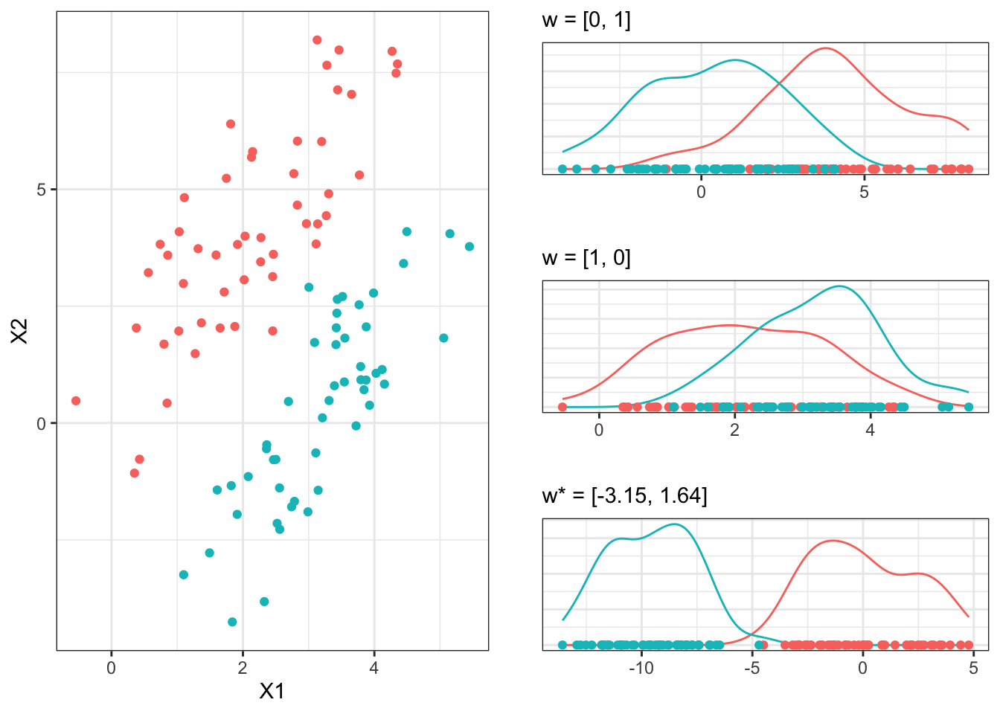
This separation now allows use to classify the data in a much better way.
Let’s take another look at the optimal \(\mathbf{w}^*\)
ev <- eigen(solve(S_W) %*% S_B1)$vectors
slope <- ev[1,2] / ev[1,1]
slope_orth <- ev[1,1] / -ev[1,2]
intercept <- ev[2,1]
data %>%
data.frame() %>%
cbind(labels) %>%
ggplot(aes(x = X1, y = X2, color = as.character(labels)))+
geom_point()+
geom_abline(intercept = intercept, slope = w_optimal[2]/w_optimal[1], color = "red")+
geom_abline(intercept = -3, slope = w_optimal[1]/-w_optimal[2], color = "red")+
geom_abline(intercept = intercept, slope = slope, color = "green")+
geom_abline(intercept = intercept, slope = slope_orth, color = "green")+
theme_bw()+
coord_fixed()+
theme(legend.position = "none")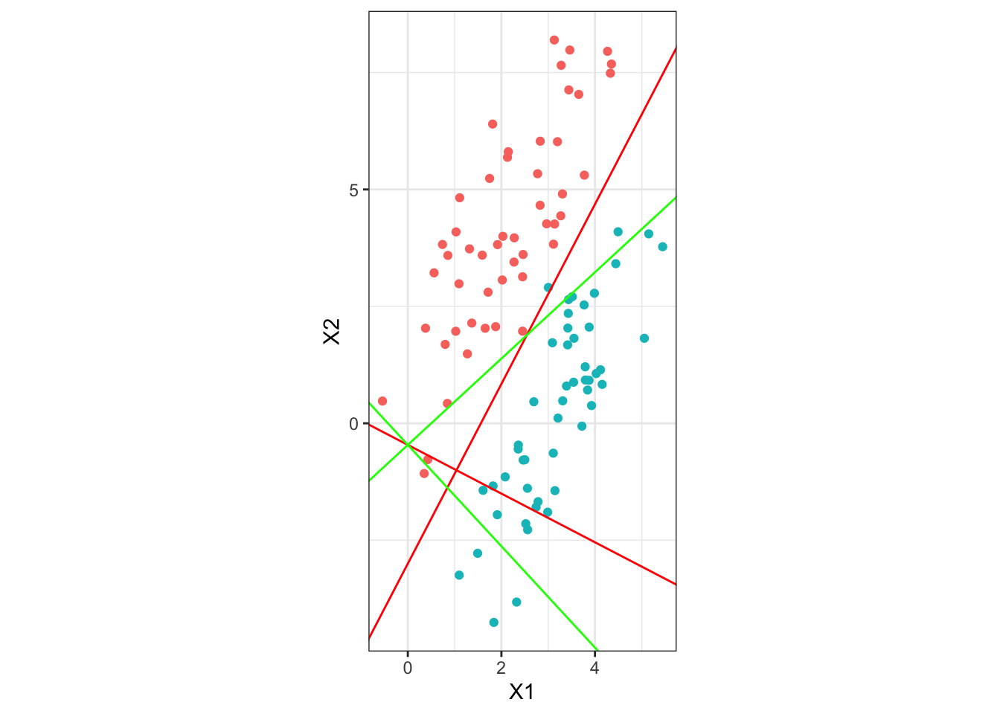
w_optimal [,1]
[1,] -3.147675
[2,] 1.638460w_optimal[2]/w_optimal[1][1] -0.5205302The red lines are calculated using the optimal \(\mathbf{w}^*\). The green lines using the first eigenvector of \(\mathbf{W}^{-1}\mathbf{B}\) where \(\mathbf{W}\) is the within class covariance matrix and \(\mathbf{B}\) the between class covariance. Both red and green should be the same…
set.seed(2014)
library(MASS)
#library(DiscriMiner) # For scatter matrices
library(ggplot2)
library(grid)
# Generate multivariate data
mu1 <- c(2, -3)
mu2 <- c(2, 5)
rho <- 0.6
s1 <- 1
s2 <- 3
Sigma <- matrix(c(s1^2, rho * s1 * s2, rho * s1 * s2, s2^2), byrow = TRUE, nrow = 2)
n <- 50
# Multivariate normal sampling
X1 <- mvrnorm(n, mu = mu1, Sigma = Sigma)
X2 <- mvrnorm(n, mu = mu2, Sigma = Sigma)
X <- rbind(X1, X2)
# Center data
Z <- scale(X, scale = FALSE)
# Class variable
y <- rep(c(0, 1), each = n)
#######
# Calculate the means of each class
class1_data <- Z[y == 1, ]
class2_data <- Z[y == 2, ]
m1 <- colMeans(class1_data)
m2 <- colMeans(class2_data)
# Calculate the overall mean
m <- colMeans(Z)
# Calculate the between-class scatter matrix
B <- (m1 - m2) %*% t(m1 - m2)
#S_B1 <- nrow(class1_data) * (m1 - m) %*% t(m1 - m) + nrow(class1_data) * (m2 - m) %*% t(m - m)
# Calculate the within-class scatter matrices
W1 <- cov(class1_data)
W2 <- cov(class2_data)
# Compute the within-class scatter matrix
W <- W1 + W2
#######
# Scatter matrices
#B <- betweenCov(variables = X, group = y)
#W <- withinCov(variables = X, group = y)
# Eigenvectors
ev <- eigen(solve(W) %*% B)$vectors
slope <- - ev[1,1] / ev[2,1]
intercept <- ev[2,1]
# Create projections on 1st discriminant
P <- Z %*% ev[,1] %*% t(ev[,1])
# ggplo2 requires data frame
my.df <- data.frame(Z1 = Z[, 1], Z2 = Z[, 2], P1 = P[, 1], P2 = P[, 2])
plt <- ggplot(data = my.df, aes(Z1, Z2))
plt <- plt + geom_segment(aes(xend = P1, yend = P2), size = 0.2, color = "gray")
plt <- plt + geom_point(aes(color = factor(y)))
plt <- plt + geom_point(aes(x = P1, y = P2, colour = factor(y)))
plt <- plt + scale_colour_brewer(palette = "Set1")
plt <- plt + geom_abline(intercept = intercept, slope = slope, size = 0.2)
plt <- plt + coord_fixed()
plt <- plt + xlab(expression(X[1])) + ylab(expression(X[2]))
plt <- plt + theme_bw()
plt <- plt + theme(axis.title.x = element_text(size = 8),
axis.text.x = element_text(size = 8),
axis.title.y = element_text(size = 8),
axis.text.y = element_text(size = 8),
legend.position = "none")
pltTODO
Logistic regression is a type of discriminative modelling, where we model the class posterior directly.
We assume that there are two discrete classes. Either the data belongs to class \(C_1 \Rightarrow y_i = 0\) or to class \(C_2 \Rightarrow y_i = 1\), so we can plot the data in a different way.
# Generate some data
n <- 100
x <- runif(n, min = 1, max = 100)
z <- 1 * x + rnorm(n, mean = 0, sd = 20)
y <- if_else(z < 50, 0, 1)
df <- data.frame(y=y,x=x)
p1 <- df %>%
ggplot(aes(x = x, y = 0, color = as.factor(y)))+
geom_point()+
theme_bw()+
theme(legend.position = "none",
axis.text.y = element_blank(),
axis.ticks.y = element_blank())+
labs(y = "")
p2 <- df %>%
ggplot(aes(x = x, y = y, color = as.factor(y)))+
geom_point()+
theme_bw()+
theme(legend.position = "none")+
coord_cartesian(ylim = c(-1, 2))
ggarrange(p1, p2)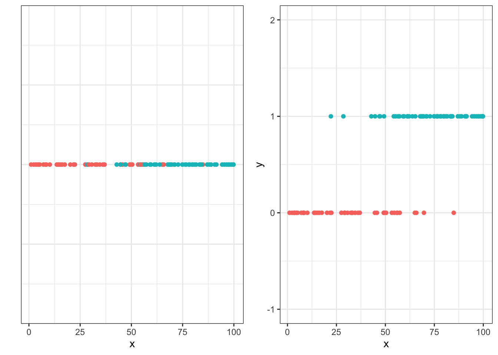
Let’s take a look at the math:
\[\begin{align*} p(C_1 | \mathbf{x}) &= \frac{p(\mathbf{x}|C_1) p(C_1)}{p(\mathbf{x})} \\ &= \frac{p(\mathbf{x}|C_1) p(C_1)}{\sum_i p(\mathbf{x}, C_i)} \\ &= \frac{p(\mathbf{x}|C_1) p(C_1)}{\sum_i p(\mathbf{x}|C_i) p(C_i)} \\ &= … \\ &= \frac{1}{1 + \exp(-a)} \qquad \text{with } a = \log \frac{p(\mathbf{x}|C_1) p(C_1)}{p(\mathbf{x}|C_2) p(C_2)} \\ &= \sigma (a) \end{align*}\]
Where \(\sigma\) is the cumulative distribution function (CDF) of the logistic distribution. We can then model \(a = \mathbf{w}^T\mathbf{x} + w_0\) and get the logistic regression function. \[ p(C_1 | \mathbf{x}) = \frac{\exp(\mathbf{w}^T\mathbf{x} + w_0)}{1 + \exp(\mathbf{w}^T\mathbf{x} + w_0)} = \frac{1}{1 + \exp(-\mathbf{w}^T\mathbf{x} - w_0)} = \sigma (\mathbf{w}^T\mathbf{x} + w_0) \] Now we model the outcome as a Bernoulli experiment. Either the data belongs to class \(C_1 \Rightarrow y_i = 0\) or to class \(C_2 \Rightarrow y_i = 1\). Then, we maximize the likelihood. \[\begin{align*} L(w) &= \prod_{i=1}^N p(C_1|\mathbf{x}_i; \mathbf{w}; w_0)^{y_i} \cdot p(C_2|\mathbf{x}_i; \mathbf{w}; w_0)^{1-y_i} \\ &= \prod_{i=1}^N \sigma (\mathbf{w}^T\mathbf{x} + w_0)^{y_i} \cdot (1 - \sigma (\mathbf{w}^T\mathbf{x} + w_0))^{1-y_i} \end{align*}\] For maximization, we can use numerical methods, like the newton algorithm.
# Define the likelihood function
neg_log_likelihood <- function(w, y, x) {
z <- w[1] + w[2]*x
prob <- 1/(1+exp(-z))
-sum(y*log(prob) + (1-y)*log(1-prob))
}
# Initial values for the parameters
w_start <- c(0,0)
# Use optim() to estimate the parameters
result <- optim(w_start, neg_log_likelihood, y=df$y, x=df$x, hessian=TRUE)
df %>%
ggplot(aes(x = x, y = y))+
geom_point()+
theme_bw()+
stat_function(fun = function(x) {1/(1+exp(-result$par[1]-result$par[2]*x))})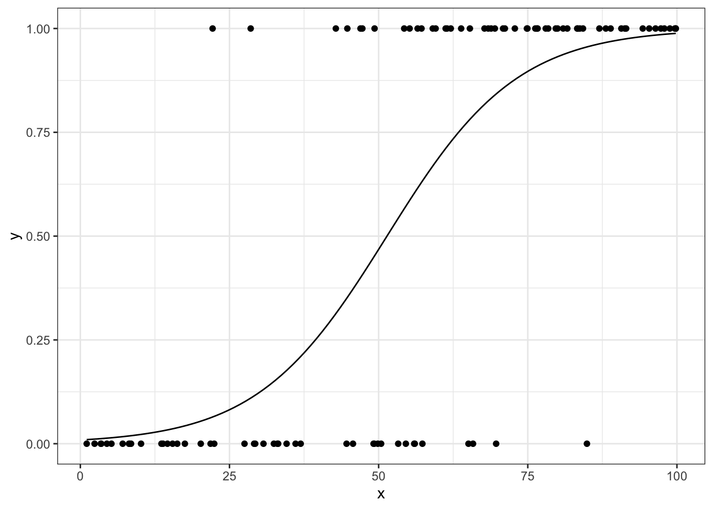
If we use different (here: quadratic) features, we can also model data that looks different
set.seed(1)
n <- 100
x <- runif(n, min = 0, max = 10)
z <- 0.2*x - 0.02*x^2 + rnorm(n = n, mean = 0, sd = .15)
y <- if_else(z < 0.3, 0, 1)
df <- data.frame(x, y)
# Define the likelihood function
neg_log_likelihood <- function(w, y, x) {
z <- w[1] + w[2]*x + w[3]*x^2
prob <- 1/(1+exp(-z))
-sum(y*log(prob) + (1-y)*log(1-prob))
}
# Initial values for the parameters
w_start <- c(0,0,0)
# Use optim() to estimate the parameters
result <- optim(w_start, neg_log_likelihood, y=df$y, x=df$x, hessian=TRUE)
df %>%
ggplot(aes(x = x, y = y))+
geom_point()+
theme_bw()+
stat_function(fun = function(x) {1/(1+exp(-result$par[1]-result$par[2]*x-result$par[3]*x^2))})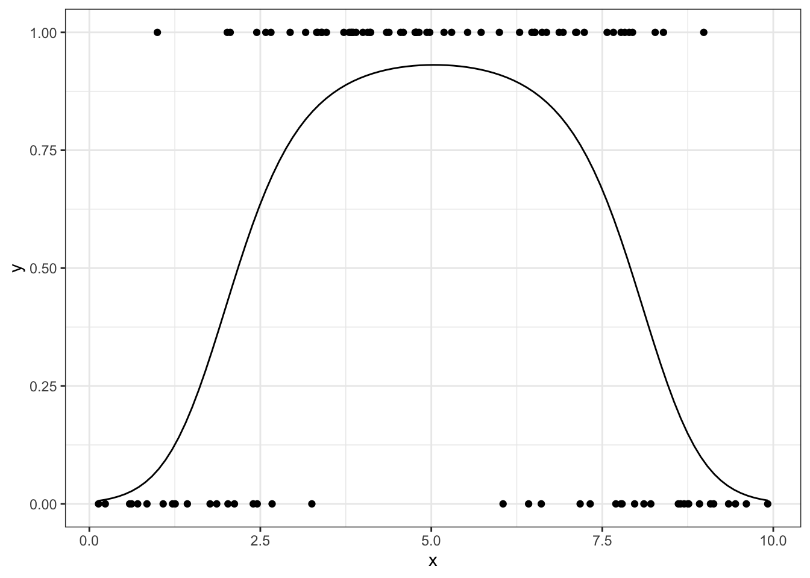
Regression is similar to classification, but instead of having discrete outputs (classes), the output is continuous.
For linear regression, we are given data points \((\mathbf{x}_i, y_i)\) which we can express as a linear combination \(\mathbf{x}_i^T \mathbf{w} + w_0 = y_i\). Sometimes, we also include \(w_0\) in \(\mathbf{w}\) and \(1\) in \(\mathbf{x}_i\). Now we can write \[ \mathbf{X}^T\mathbf{w} + \mathbf{e}= \mathbf{y} \]
where \(\mathbf{X} = \begin{bmatrix}\mathbf{x}_1 & … & \mathbf{x}_n \end{bmatrix}\) and \(\mathbf{y} = \begin{bmatrix}y_1 & … & y_n \end{bmatrix}^T\) and \(\mathbf{e}\) is the error term.
\[ \underbrace{ \begin{bmatrix} 1 & 1 & 1 & 1 \\ 1 & 2 & 3 & 4 \end{bmatrix}^T }_{\mathbf{X}^T} \underbrace{ \begin{bmatrix} 9.5 \\ -2.3 \end{bmatrix} }_\mathbf{w} + \underbrace{ \begin{bmatrix} 0.8 \\ -0.9 \\ -0.6 \\ 0.7 \end{bmatrix} }_\mathbf{e} = \begin{bmatrix} 1 & 1 \\ 1 & 2 \\ 1 & 3 \\ 1 & 4 \end{bmatrix} \begin{bmatrix} 9.5 \\ -2.3 \end{bmatrix} + \begin{bmatrix} 0.8 \\ -0.9 \\ -0.6 \\ 0.7 \end{bmatrix} = \underbrace{ \begin{bmatrix} 8 \\ 4 \\ 2 \\ 1 \end{bmatrix} }_\mathbf{y} \]
Note on notation: Be careful, this is different to how economics people usually write the problem in a slightly different way, as they fill the \(X\) matrix differently so it does not need to be transposed. They also call the weights vector \(\mathbf{\beta}\). But both produce the same output.
Here’s a simple example to show the difference in the notation between Econometrics and Machine Learning (or the slides).
x <- c(1,2,3,4)
y <- c(8,4,2,1)
X_econ <- cbind(1, x)
X_econ x
[1,] 1 1
[2,] 1 2
[3,] 1 3
[4,] 1 4X_ML <- rbind(1, x)
X_ML [,1] [,2] [,3] [,4]
1 1 1 1
x 1 2 3 4w <- solve(X_ML %*% t(X_ML)) %*% X_ML %*% y
w [,1]
9.5
x -2.3y_hat <- t(X_ML) %*% w
y_hat [,1]
[1,] 7.2
[2,] 4.9
[3,] 2.6
[4,] 0.3The first row consisting of only 1’s is there for the intercept. In the 2d case you can think of it as the y-axis intercept, if y is your output variable.
And graphically, it looks like this.
data.frame(x, y) %>%
ggplot(aes(x = x, y = y))+
geom_point()+
geom_abline(intercept = w[1], slope = w[2])+
coord_cartesian(xlim = c(0, 5), ylim = c(0, 10))+
theme_bw()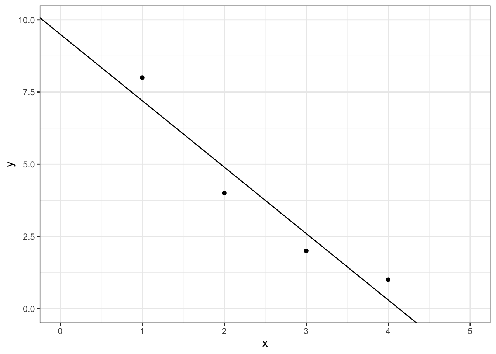
Linear regression has a analytical solution when you try to minimize the squared error \[\begin{align*} \mathbf{w} &= \underset{\mathbf{w}}{\arg\min} \ \sum_{i=1}^N\left(\mathbf{X}^T\mathbf{w} - \mathbf{y} \right)^2 \\ &= \underset{\mathbf{w}}{\arg\min} \ \mathbf{e}^T\mathbf{e} \\ \end{align*}\] which, after derivation and setting zero leads to \[ \mathbf{w} = \left(\mathbf{X} \mathbf{X}^T \right)^{-1} \mathbf{X} \mathbf{y} \] as has been used in the code above.
Note on notation:
In my notation here, \(\mathbf{X}\) cannot only contain the “raw” data, but also features, for example a quadratic term, an interaction term or something else. On the slides, \(\mathbf{\Phi}\) was used to indicate that features are included.
What are features? Let’s assume we are given a data set with \(y\) as the output variable and \(x\) and \(z\) as the input variables. We could then, for example, use a linear and quadratic features for \(x\) and \(z\) as well as a interaction term \(x\cdot z\): \[ \mathbf{X} = \begin{bmatrix} 1 & 1 & \cdots & 1 \\ x_1 & x_2 & \cdots & x_n \\ x_1^2 & x_2^2 & \cdots & x_n^2 \\ z_1 & z_2 & \cdots & z_n \\ z_1^2 & z_2^2 & \cdots & z_n^2 \\ x_1z_1 & x_2z_2 & \cdots & x_nz_n \end{bmatrix} \]
Here is another example. We first generate some data points with \(y = 2 + 3x - 0.5x^2 + 2\sin(x)\) and add some noise. Then we create the \(\mathbf{X}\) matrix with the features \(1,\ x,\ x^2,\ \sin(x)\) and solve for the weights vector \(w\).
set.seed(1)
n <- 100
x <- runif(n, min = 0, max = 10)
e <- rnorm(n, mean = 0, sd = 1)
y <- 2 + 3*x - 0.5*x^2 + 2*sin(x) + e
X <- rbind(1, x, x^2, sin(x))
w <- solve(X %*% t(X)) %*% X %*% y
w [,1]
2.0790292
x 2.9033481
-0.4865858
1.7292521As we can see, the estimates are pretty close. And here is the graph.
data.frame(x, y) %>%
ggplot(aes(x = x, y = y))+
geom_point()+
geom_function(fun = function(x) w[1] + w[2]*x + w[3]*x^2 + w[4]*sin(x))+
theme_bw()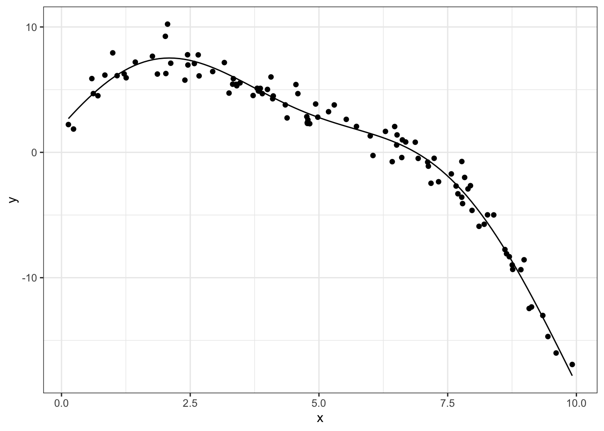
Just be careful and don’t make your model too large with too many features (like polynomials of degree 20) as this will probably lead to overfitting.
Note that this is still a linear regression problem, as it is linear in it’s parameters. Just the data is transformed. \(y = a\sin(bx)\) would be an example of a non-linear regression problem, which cannot be solved this way. Some problems, like \(y = \exp(ax)\) might look like they are not linear, but can be transformed into a linear problem: \(\ln(y) = ax\).
Now let’s take a look at what could go wrong in this approach. The largest numerical problem can arise with the inversion of \(\mathbf{X}\mathbf{X}^T\), in particular if the rows of \(\mathbf{X}\) are strongly linearly dependent, as \(\mathbf{X}\mathbf{X}^T\) is not full rank anymore. \[ \mathbf{X} = \begin{bmatrix} 1 & 1 & \cdots & 1 \\ x_1 & x_2 & \cdots & x_n \\ 2x_1 & 2x_2 & \cdots & 2x_n \end{bmatrix} \] Let’s check that with our example from before.
x <- c(1,2,3,4)
y <- c(8,4,2,1)
X <- rbind(1, x, 2*x)
solve(X %*% t(X)) %*% X %*% yError in solve.default(X %*% t(X)): Lapack routine dgesv: system is exactly singular: U[3,3] = 0rankMatrix(X)[1][1] 2As expected, the inversion fails because the matrix is not full rank.
Similarly, the inversion might run into numerical issues if two features (rows of the \(\mathbf{X}\) matrix) are very similar. This leads us straight to ridge regression, which will be discussed later.
Let’s take a deeper look at the error term \(\mathbf{e}\) in \(\mathbf{X}^T\mathbf{w} + \mathbf{e}= \mathbf{y}\). We need to include this term, because our linear combination of \(\mathbf{X}\) and \(\mathbf{w}\) will not perfectly come out to \(y\) with real world data. But until now, we did not assume much about \(\mathbf{e}\). Let’s now assume, that it is normally distributed following \(e \sim N(0, \sigma^2)\). Now all of a sudden, \(y\) is also randomly distributed with \(y_i \sim N(\mathbf{x}_i^T\mathbf{w},\sigma^2)\)

Now, we can not only get the solution to OLS by minimizing the squared error, but also by maximizing the likelihood of observing \(y\) in our data. \[ p(\mathbf{y} | \mathbf{X}; \mathbf{w}) = \prod_{i=1}^n N(y_i | \mathbf{x}_i^T\mathbf{w},\sigma^2) \]
As before, we don’t maximize this likelihood function, but the log of this function. We then differentiate with respect to \(\mathbf{w}\) and set it to zero. We then find, that this approach leads to the exact same solution as the least squares approach from before. That means, that even before, we implicitly assumed a distribution!
When we differentiate the log-likelihood function with respect to \(\sigma^2\), set it to zero and solve it we find a equation to estimate the variance \(\sigma^2 = \frac{1}{n} \mathbf{e}^T\mathbf{e}\)
TODO: Loss function in regression
TODO
Overfitting is a big problem, especially in smaller datasets, as shown by the following example with polynomial degree 5.
set.seed(1)
n_1 <- 10
x_1 <- runif(n_1, min = 0, max = 5)
y_1 <- 2 + 3*x_1 - 0.5*x_1^2 + rnorm(n_1, mean = 0, sd = .5)
set.seed(2)
y_2 <- 2 + 3*x_1 - 0.5*x_1^2 + rnorm(n_1, mean = 0, sd = .5)
p1 <- data.frame(x = x_1, y_1, y_2) %>%
ggplot()+
geom_point(aes(x = x, y = y_1), shape = 3)+
geom_smooth(aes(x = x, y = y_1),method = "lm", se = FALSE,
formula = y ~ poly(x, 5),
alpha = .5, color = "red")+
geom_point(aes(x = x, y = y_2), shape = 4)+
geom_smooth(aes(x = x, y = y_2),method = "lm", se = FALSE,
formula = y ~ poly(x, 5),
alpha = .5, color = "blue")+
theme_bw()+
labs(subtitle = paste("N =", n_1),
y = "y")+
coord_cartesian(ylim = c(2.5, 7.5))
n_3 <- 200
x_3 <- runif(n_3, min = 0, max = 5)
y_3 <- 2 + 3*x_3 - 0.5*x_3^2 + rnorm(n_3, mean = 0, sd = .5)
p2 <- data.frame(x = x_3, y = y_3) %>%
ggplot(aes(x = x, y = y))+
geom_point()+
geom_smooth(method = "lm", se = FALSE,
formula = y ~ poly(x, 5))+
theme_bw()+
labs(subtitle = paste("N =", n_3))+
coord_cartesian(ylim = c(2.5, 7.5))
ggarrange(p1, p2)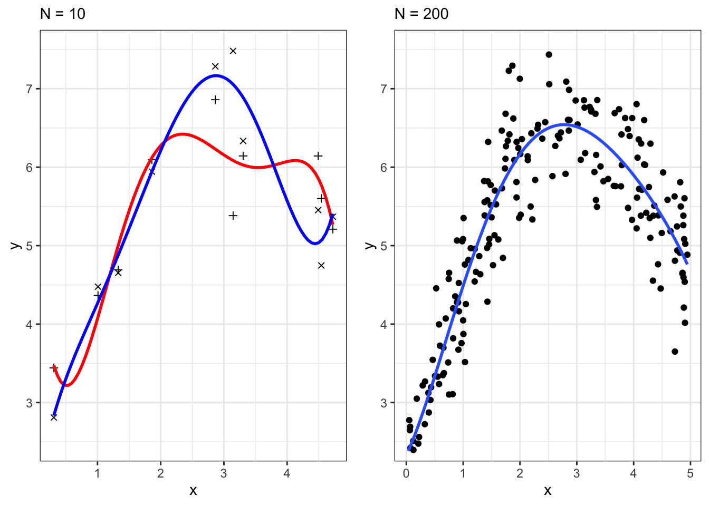
If we sampled 10 different points, our estimates would change drastically. This is shown in the left plot, where two different samples with their fitted line are overlayed. We therefore say that OLS has a high variance. To avoid that, we can use a prior distribution over the parameters \(p(\mathbf{w})\). \[ \underbrace{p(\mathbf{w}|\mathbf{X},\mathbf{y})}_\text{Posterior} \propto \underbrace{p(\mathbf{y}|\mathbf{X},\mathbf{w})}_\text{Likelihood} \cdot \underbrace{p(\mathbf{w})}_\text{Prior} \]
This prior could be a Gaussian, so assume that each single weight \(w_j\) from the weights vector \(\mathbf{w}\) is distributed normally so that we get \(\mathbf{w} \sim N(\mathbf{0}, \sigma_0^2\mathbf{I})\). That means that, before having seen any data, we believe all the weights to be rather small. And that we need to see a lot of “evidence” to accept large weights. This will “smooth” out our fitted line, if we think in a graphical sense.
A note on notation:
From the slides, \(N(\mathbf{w}; 0, \sigma_0^2)\) means the exact same as \(\mathbf{w} \sim N(0, \sigma_0^2)\). The \(\mathbf{w}\) in the normal distribution is just there to indicate the variable that is drawn from the distribution.
\(p(\mathbf{w}|\mathbf{X},\mathbf{y};\sigma_0,\sigma)\) is the conditional distribution of \(\mathbf{w}\) given the data \(\mathbf{X}\) and \(\mathbf{y}\) and the parameters \(\sigma_0\) (from the prior) and \(\sigma\) (from the error term). The \(;\) is there to differentiate types of parameters.
Now we want to maximize this posterior probability, or rather the log-probability, because that’s easier and leads to the same result. Remember that the log splits a product into the sum of the logs and remember that we assumed a distribution for the error term with \(e \sim N(0,\sigma^2)\), which lead to \(\mathbf{y} \sim N(\mathbf{X}^T\mathbf{w},\sigma^2)\)
\[ \begin{align*} \mathbf{w}_\text{MAP} &= \underset{\mathbf{w}}{\arg\max}\ p(\mathbf{w}|\mathbf{X},\mathbf{y}) \\ &= \underset{\mathbf{w}}{\arg\max}\ p(\mathbf{y}|\mathbf{X},\mathbf{w}) \cdot p(\mathbf{w})\\ &= \underset{\mathbf{w}}{\arg\max}\ \log p(\mathbf{y}|\mathbf{X},\mathbf{w}) + \log p(\mathbf{w}) \\ &= \underset{\mathbf{w}}{\arg\max}\ \log p(\mathbf{y}|\mathbf{X},\mathbf{w}) + \log N(\mathbf{0}, \sigma_0^2\mathbf{I}) \\ & \cdots \\ &= (\mathbf{X}\mathbf{X}^T + \frac{\sigma^2}{\sigma_0^2}\mathbf{I})^{-1} \mathbf{X} \mathbf{y} \end{align*} \]
For reference, this video has (almost) all the math in it.
The term \(\frac{\sigma^2}{\sigma_0^2}\mathbf{I}\) is a regularization term. The larger it gets, the “smoother” the output. For easier readability, we write \(\frac{\sigma^2}{\sigma_0^2} = \lambda\).
# Data generation
set.seed(1)
n <- 20
x <- runif(n, min = 0, max = 5)
y <- 2 + 3*x - 0.5*x^2 + rnorm(n, mean = 0, sd = .5)
# Plot 1
# Solving
p <- 5
r <- 0
X <- t(poly(x, p, raw = TRUE, simple = TRUE))
w <- solve(X %*% t(X)+ r*diag(p)) %*% X %*% y
# Plotting
x_plot <- seq(from = min(x), to = max(x), by = 0.01)
X_plot <- t(poly(x_plot, p, raw = TRUE, simple = TRUE))
y_plot <- t(X_plot) %*% w
p1 <- data.frame(x = x, y = y) %>%
ggplot(aes(x = x, y = y))+
geom_point()+
geom_line(data = data.frame(x = x_plot, y = y_plot), aes(x = x, y = y))+
coord_cartesian(ylim = c(3, 7), xlim = c(0,5))+
theme_bw()+
labs(subtitle = paste("N = ", n, "; λ = ", r, sep = ""))+
annotate("text", x = 0, y = 6.5, hjust = 0,
label = paste("w1 = ", round(w[1], 2), "\n", "w2 = ", round(w[2], 2), "\n", "…", sep = ""))
# Plot 2
# Solving
p <- 5
r <- .5
X <- t(poly(x, p, raw = TRUE, simple = TRUE))
w <- solve(X %*% t(X)+ r*diag(p)) %*% X %*% y
# Plotting
x_plot <- seq(from = min(x), to = max(x), by = 0.01)
X_plot <- t(poly(x_plot, p, raw = TRUE, simple = TRUE))
y_plot <- t(X_plot) %*% w
p2 <- data.frame(x = x, y = y) %>%
ggplot(aes(x = x, y = y))+
geom_point()+
geom_line(data = data.frame(x = x_plot, y = y_plot), aes(x = x, y = y))+
coord_cartesian(ylim = c(3, 7), xlim = c(0,5))+
theme_bw()+
labs(subtitle = paste("N = ", n, "; λ = ", r, sep = ""))+
annotate("text", x = 0, y = 6.5, hjust = 0,
label = paste("w1 = ", round(w[1], 2), "\n", "w2 = ", round(w[2], 2), "\n", "…", sep = ""))
ggarrange(p1, p2, nrow = 1)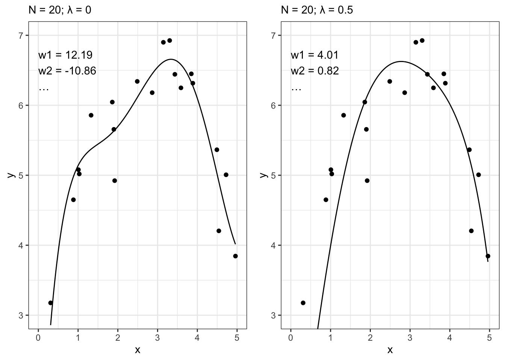
Let’s remember what exactly \(\sigma_0^2\) stands for: It is the variance from our prior distribution on \(\mathbf{w}\). So the smaller this variance, the closer to 0 we assume the weights to be, before seeing any data. And now take a look at how our estimates for \(\mathbf{w}\) behave for a larger \(\lambda\) (which may be caused by a smaller \(\sigma_0^2\)): The estimates get closer to 0. Exactly like we wanted! And this results in the smoother curve.
There is yet another way to arrive at the same outcome: Adding a regularization term to our objective function from OLS. \[ \begin{align*} \mathbf{w} &= \underset{\mathbf{w}}{\arg\min}\ \frac{1}{2}\|\mathbf{X}^T\mathbf{w} - \mathbf{y}\|^2 + \frac{\lambda}{2}\|\mathbf{w}\|^2 \\ &= (\mathbf{X}\mathbf{X}^T + \lambda\mathbf{I})^{-1} \mathbf{X} \mathbf{y} \end{align*} \]
Another benefit of this regularization term is, that it helps us with the matrix inversion. Without this term and with very similar features, we could run into numerical problems. When we add this regularization term, we basically ensure that the matrix \(\mathbf{X}\mathbf{X}^T + \lambda\mathbf{I}\) is full rank before trying to invert it.
The traditional approach of Linear Regression has a limitation — it requires “handcrafted” features. Ideally, we would want to let the number of features \(d\) grow to infinity (\(d \rightarrow \infty\)) and combine this with regularization to automate the feature selection process. However, this leads to computational challenges. For instance, we need to multiply a \(n \times d\) matrix with a \(d \times n\) matrix and then invert a \(d \times d\) matrix to compute \(\mathbf{w}\). When predicting new data points, we need to calculate \(\mathbf{X}^T\mathbf{w}\), where \(\mathbf{w}\) is of size \(d \times 1\). To overcome these issues, we introduce kernel methods.
Kernels are functions that measure the similarity between data points. They allow us to perform computations in a high-dimensional feature space without explicitly calculating the coordinates of the data points in that space. If \(\mathbf{x}\) only enters our model as \(\phi(\mathbf{x})^T \phi(\mathbf{x}^\prime)\), we can use a kernel function \(k(\mathbf{x}, \mathbf{x}^\prime)\) instead of choosing \(\phi(\mathbf{x})\). The kernel function is represented as: \[ k(\mathbf{x}, \mathbf{x}^\prime) = \phi(\mathbf{x})^T \phi(\mathbf{x}^\prime) \]
For instance, consider the features in a regression setting: \[ \phi(\mathbf{x}) = (\mathbf{x}_1, \mathbf{x}_2, \mathbf{x}_1 \mathbf{x}_2,\mathbf{x}_1^2,\mathbf{x}_2^2) \] This transforms our 2-dimensional data \((x_1,x_2)\) into a 5-dimensional feature space \(\mathbf{\Phi}(x)\). While this transformation can be complex, we can simplify it using a kernel, such as a polynomial kernel: \[ k(\mathbf{x}, \mathbf{x}^\prime) = \phi(\mathbf{x})^T \phi(\mathbf{x}^\prime) = (1 + \mathbf{x}^T\mathbf{x}^\prime)^d \]
Some kernels, like the Gaussian kernel or the radial basis function (RBF) kernel, correspond to transformations, such as \(\phi(x)\), which would be infinitely large and thus impossible to find.
In contrast to much of econometrics, here in machine learning, we care mostly about predicting new data rather than understanding the connection between things. For example, economists might want to study the relation between drinking and deaths in motor vehicle accidents, see how big it is and what other influences there are. Machine learning people might only care about predicting the number of motor vehicle accidents for next year. Thus, they don’t actually need to know the weights \(\mathbf{w}\).
A note on notation:
Now we will use \(\phi(\mathbf{x})\) to indicate a (non-linear) transformation to a single “raw” datapoint \(\mathbf{x}\). And \(\mathbf{\Phi}(\mathbf{X})\) denotes the transformed \(\mathbf{X}\) matrix containing all the datapoints.
And \(\mathbf{X}\) as well as \(\mathbf{\Phi}\) are now again filled with one datapoint per row in contrast to how we did it in the regression chapter.
Let’s say we want to predict the outcome \(\hat{y}\) (the hat stands for a prediction) at the (test) input \(\mathbf{x}_\star\) We can write this as \[ \begin{align*} \hat{y}(\mathbf{x}_\star) &= \mathbf{w}^T \phi(\mathbf{x}_\star) \\ &= \left(\left(\mathbf{\Phi}^T\mathbf{\Phi} + n\lambda\mathbf{I}\right)^{-1} \mathbf{\Phi}^T\mathbf{y} \right)^T \phi(\mathbf{x_\star}) \\ &= \mathbf{y}^T \mathbf{\Phi} \left(\mathbf{\Phi}^T \mathbf{\Phi} + n\lambda\mathbf{I}\right)^{-1} \phi(\mathbf{x_\star}) \\ &= \mathbf{y}^T \left(\mathbf{\Phi} \mathbf{\Phi}^T + n\lambda\mathbf{I}\right)^{-1} \mathbf{\Phi} \phi(\mathbf{x_\star}) \\ &= \mathbf{y}^T \left(\mathbf{K}(\mathbf{X},\mathbf{X}) + n\lambda\mathbf{I}\right)^{-1} \mathbf{K}(\mathbf{X},\mathbf{x_\star}) \\ &= \mathbf{a}^T \mathbf{K}(\mathbf{X},\mathbf{x_\star}) \end{align*} \]
Remember:
\(y(\mathbf{x}) = \phi(\mathbf{x})^T \mathbf{w} = \mathbf{w}^T \phi(\mathbf{x})\) and
\(\mathbf{K}(\mathbf{x_\star},\mathbf{X}) = \mathbf{K}(\mathbf{X},\mathbf{x}_\star)\) because it’s just a measure of distance where the order does not play a role.
with
\[ \begin{align*} \mathbf{K}(\mathbf{x_\star},\mathbf{X}) &= \begin{bmatrix} k(\mathbf{x}_\star,\mathbf{x}_1) \\ \cdots \\ k(\mathbf{x}_\star,\mathbf{x}_N) \end{bmatrix} \\ \mathbf{K}(\mathbf{X},\mathbf{X}) &= \begin{bmatrix} k(\mathbf{x}_1,\mathbf{x}_1) & \cdots & k(\mathbf{x}_1,\mathbf{x}_N) \\ \vdots & \ddots & \vdots \\ k(\mathbf{x}_N,\mathbf{x}_1) & \cdots & k(\mathbf{x}_N,\mathbf{x}_N) \\ \end{bmatrix} \\ \mathbf{a} &= \left(\mathbf{K}(\mathbf{X},\mathbf{X}) + \lambda\mathbf{I} \right)^{-1} \mathbf{y} \end{align*} \]
The important thing to note here is that we can represent every calculation with kernels, so we don’t need to touch \(\mathbf{w}\) or \(\mathbf{\Phi}\) anymore.
Here’s an example of kernel ridge regression with a 3d dataset
# Set the seed for reproducibility
set.seed(123)
# Number of samples
N <- 1000
# Generate inputs
x1 <- runif(N, -1, 1)
x2 <- runif(N, -1, 1)
# Define function f
f <- function(x1, x2) {
sin(pi * x1) + cos(pi * x2)
}
# Generate outputs with some Gaussian noise
e <- rnorm(N, 0, 0.1)
y <- f(x1, x2) + e
data_train <- data.frame(x1, x2, y)
# Gaussian kernel function
gaussian_kernel <- function(x1, x2, sigma = 1) {
exp(-sum((x1 - x2)^2) / (2 * sigma^2))
}
# Create the kernel matrix
K <- matrix(0, N, N)
for (i in 1:N) {
for (j in 1:N) {
K[i, j] <- gaussian_kernel(c(x1[i], x2[i]), c(x1[j], x2[j]))
}
}
# Ridge regression parameter
lambda <- 0.1
# Solve for alpha
alpha <- solve(K + lambda * diag(N), y)
# Prediction function
predict_krr <- function(x_star) {
y_hat <- 0
for (i in 1:N) {
y_hat <- y_hat + alpha[i] * gaussian_kernel(c(x1[i], x2[i]), x_star)
}
return(y_hat)
}
# Make a prediction
#predict_krr(c(0.2, -0.5))
#f(0.2, -0.5)And the corresponding plot, where the red points are from the training data and the surface is the prediction.
# Create a grid of inputs
x1_grid <- seq(-1, 1, length.out = 30)
x2_grid <- seq(-1, 1, length.out = 30)
grid <- expand.grid(x1 = x1_grid, x2 = x2_grid)
# Predict at each input in the grid
y_grid <- apply(grid, 1, predict_krr)
# Create a 3D plot
z <- matrix(y_grid, length(x1_grid), length(x2_grid))
res <- persp(x1_grid, x2_grid, z, theta = 160, phi = 15, expand = .5, col = "lightblue", xlab = "x1", ylab = "x2", zlab = "y")
points(trans3d(x1, x2, y, pmat = res), col = 2, pch = 16)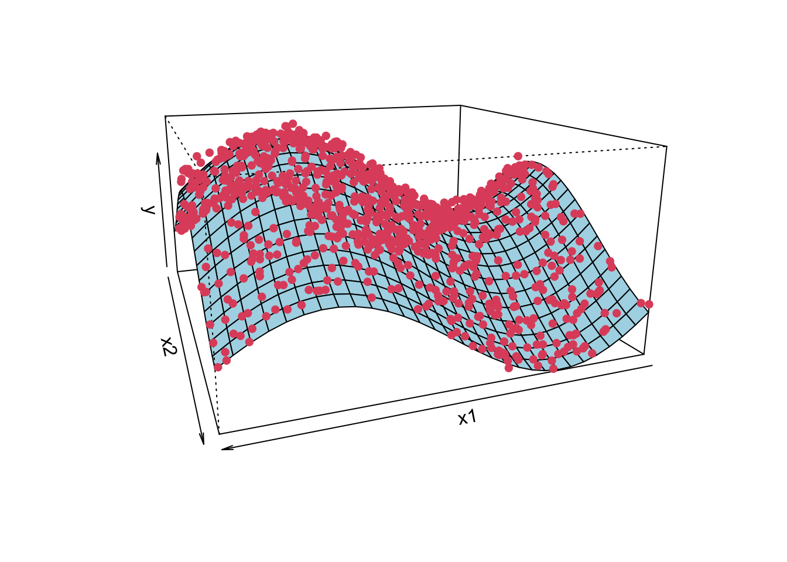
Here’s the same but as a crossection for \(x_2 = 0\).
# Create a grid of inputs
x1_grid <- seq(-1, 1, by = 0.1)
x2_grid <- seq(-1, 1, by = 0.1)
grid <- expand.grid(x1 = x1_grid, x2 = x2_grid)
# Predict at each input in the grid
y_grid <- apply(grid, 1, predict_krr)
grid_new <- grid %>% cbind(x3 = y_grid)
grid_new %>%
filter(x2 == 0) %>%
ggplot(aes(x = x1, y = x3))+
geom_line()+
geom_point(data = data_train %>% filter(round(x2, 1) == 0), aes(x = x1, y = y))+
theme_bw()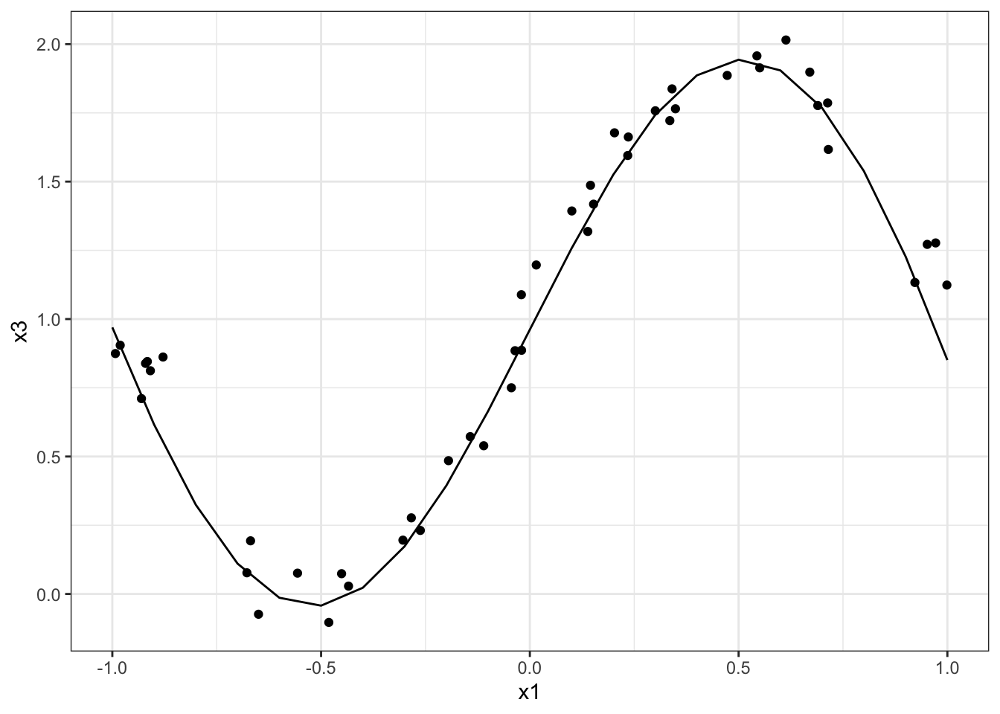
The following is another example but with a 2d dataset.
# Set the seed for reproducibility
set.seed(123)
# Number of samples
N <- 100
# Generate inputs
x <- runif(N, -1, 1)
# Define function f
f <- function(x) {
sin(pi * x) + 7 - 0.1*x^2
}
# Generate outputs with some Gaussian noise
e <- rnorm(N, 0, .2)
y <- f(x) + e
# Gaussian kernel function
gaussian_kernel <- function(x1, x2, sigma = 1) {
exp(-sum((x1 - x2)^2) / (2 * sigma^2))
}
# Create the kernel matrix
K <- matrix(0, N, N)
for (i in 1:N) {
for (j in 1:N) {
K[i, j] <- gaussian_kernel(x[i], x[j])
}
}
# Ridge regression parameter
lambda <- 0.1
# Solve for alpha in Ka = y
alpha <- solve(K + lambda * diag(N), y)
# Prediction function
predict_krr <- function(x_star) {
y_hat <- 0
for (i in 1:N) {
y_hat <- y_hat + alpha[i] * gaussian_kernel(x[i], x_star)
}
return(y_hat)
}
# Test inputs
x_star <- seq(from = -1.5, to = 1.5, by = 0.01)
y_hat <- sapply(x_star, predict_krr)
ggplot()+
geom_point(data = data.frame(x, y), aes(x = x, y = y))+
geom_line(data = data.frame(x = x_star, y = y_hat), aes(x = x, y = y))+
theme_bw()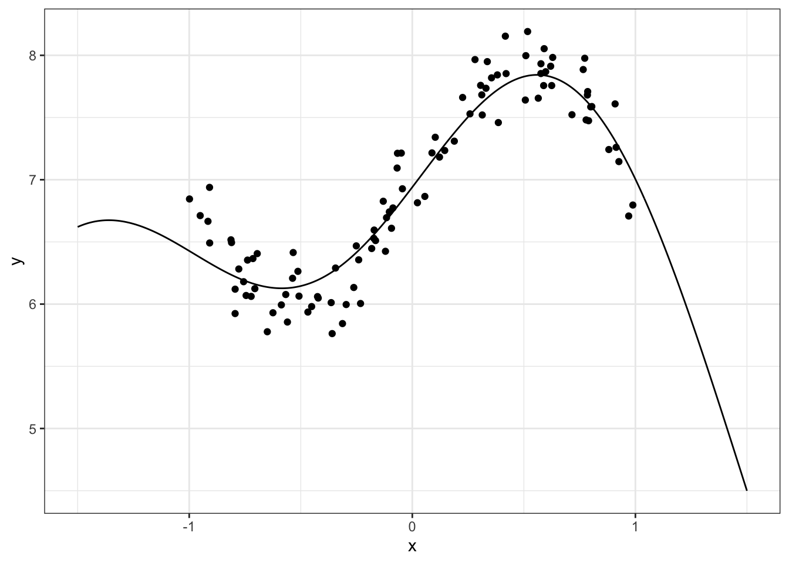
Now we know from kernel ridge regression that we don’t actually need \(\mathbf{w}\), if all we care about is predicting new data. So now the idea is to remove \(\mathbf{w}\) by marginalizing over it or integrating it out. \[ \begin{align*} \underbrace{p(\hat{y}|\mathbf{x}_\star, \mathbf{X}, \mathbf{y})}_\text{predictive distribution} &= \int p(\hat{y}, \mathbf{w}|\mathbf{x}_\star, \mathbf{X}, \mathbf{y}) \ d\mathbf{w} \\ &= \int \underbrace{p(\hat{y}|\mathbf{x}_\star, \mathbf{w})}_\text{regression model} \ \underbrace{p(\mathbf{w}|\mathbf{X}, \mathbf{y})}_\text{posterior} \ d\mathbf{w} \end{align*} \]
Here, \(\hat{y}\) is the predicted value based on a test input \(\mathbf{x}_\star\).
Both the regression model and the posterior are normally distributed. For the predictive distribution, we get a closed form solution: \[ \hat{y} \sim N(\mu_\star, \sigma_\star) \]
with \[ \begin{align*} \mu_\star &= \mathbf{\phi}(\mathbf{x_\star})^T \underbrace{\left(\frac{\sigma^2}{\sigma_0^2}\mathbf{I} + \mathbf{\Phi}^T\mathbf{\Phi} \right)^{-1} \mathbf{\Phi}^T \mathbf{y}}_{\mathbf{w}_\text{MAP}} \\ \sigma_\star &= \frac{1}{\sigma^2} + \mathbf{\phi}(\mathbf{x_\star})^T \left(\frac{1}{\sigma_0^2}\mathbf{I} + \frac{1}{\sigma^2} \mathbf{\Phi}^T \mathbf{\Phi} \right)^{-1} \mathbf{\phi}(\mathbf{x_\star}) \end{align*} \]
Notice that \(\mu_\star\) is just a prediction using “normal” ridge regression with the prior \(p(\mathbf{w}) = N(0, \sigma_0^2 \mathbf{I})\).
Note on notation:
Be careful. The slides use an inconsistent notation for \(\mathbf{\Phi}\) (or \(\mathbf{X}\)). Now it seems like the datapoints are in the rows and features are in the columns, as it’s found in econometrics. Before, it was the other way around.
Let’s look at an example. Here, we create some data points from the polynomial function \(y = 3 + 5x - 2x^2 + 0.3x^3\) with noise. We then use a polynomial of degree 8 (including the 1 for the intercept) as the feature function for the regression. We also need to choose the (expected?) data variance \(\sigma^2\) and prior variance for our weights \(\sigma_0^2\).
set.seed(1)
# Create some test data
n <- 15
x <- runif(n, min = 0, max = 5)
y <- 3 + 5*x - 2*x^2 + 0.3*x^3 + rnorm(n, mean = 0, sd = 1)
y <- y - mean(y)
data <- data.frame(x, y)
#data %>%
# ggplot(aes(x = x, y = y))+
# geom_point()+
# theme_bw()# Define your hyperparameters
sigma <- 1
sigma_0 <- 2
p <- 8
# Define your basis functions
phi_fun <- function(x) {
c(1, poly(x, degree = p-1, raw = TRUE, simple = TRUE))
}
# Calculate Phi matrix for training data
Phi <- t(sapply(x, phi_fun))
# Define a sequence of test inputs
x_star <- seq(min(x)-1.5, max(x)+1.5, by = 0.01)
# Calculate mu_star and sigma_star for each x_star
mu_star <- sapply(x_star, function(x_star) {
phi_star <- phi_fun(x_star)
t(phi_star) %*% solve((sigma^2/sigma_0^2) * diag(p) + t(Phi) %*% Phi) %*% t(Phi) %*% data$y
})
sigma_star <- sapply(x_star, function(x_star) {
phi_star <- phi_fun(x_star)
1/sigma^2 + t(phi_star) %*% solve(1/sigma_0^2 * diag(p) + 1/sigma^2 * t(Phi) %*% Phi) %*% phi_star
})
data.frame(x_star, mu_star, sigma_star) %>%
mutate(conf_interval_90 = qnorm(0.95, mean = 0, sd = sigma_star),
conf_interval_99 = qnorm(0.995, mean = 0, sd = sigma_star)) %>%
ggplot()+
geom_ribbon(aes(x = x_star, ymin = mu_star-conf_interval_99, ymax = mu_star+conf_interval_99, fill = "99"), alpha = 0.2)+
geom_ribbon(aes(x = x_star, ymin = mu_star-conf_interval_90, ymax = mu_star+conf_interval_90, fill = "90"), alpha = 0.2)+
geom_line(aes(x = x_star, y = mu_star))+
geom_point(data = data, aes(x = x, y = y))+
scale_fill_manual(values = c("90" = "blue", "99" = "red"),
labels = c("90%", "99%"))+
theme_bw()+
coord_cartesian(ylim = c(min(data$y)-5, max(data$y)+5))+
theme(legend.position = "top")+
labs(fill = "Confidence Intervals",
x = "x",
y = "y")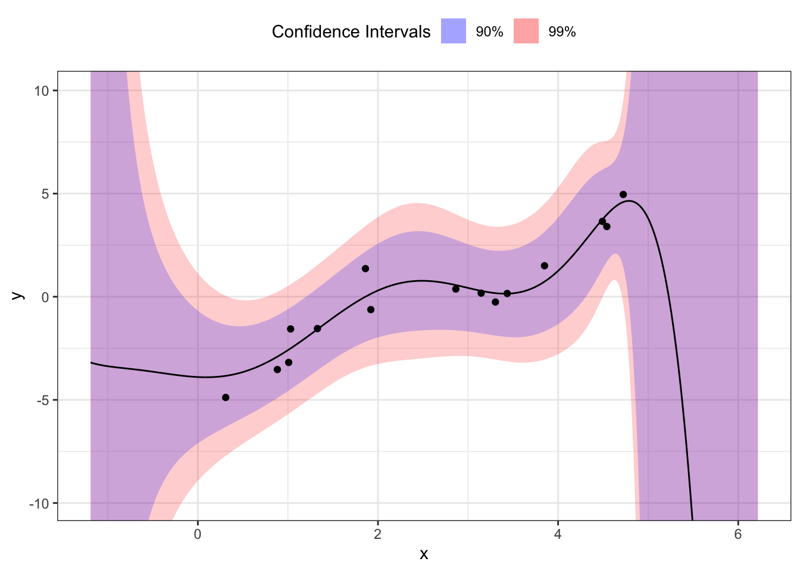
For every test input \(x_\star\) we get a mean \(\mu_\star\) and a variance \(\sigma_\star\). These values fully describe a normal distribution around the mean. To visualize this, we calculated two confidence intervals and plotted them. The blue 90% confidence interval means, that 90% of the expected outcomes would lie inside that ribbon. As we hoped, the confidence intervals get larger for regions of \(x\) with little or no training data. Interestingly, the confidence intervals diverge drastically after the last training data point, while not doing so before the first. This is probably because the polynomial used as the model will diverge very fast for larger values of \(x\), while being relatively stable for values around 0.
Tweaking \(\sigma^2\) changes the confidence intervals, while changing \(\sigma_0^2\) mostly changes the means.
Gaussian processes are now a combination of kernel ridge regression and the Bayesian approach. The idea here is to formulate the predictive distribution from Bayesian linear regression using kernels. The result is what we call Gaussian process regression.
We need training data \(\mathcal{T} = \{\mathbf{x}_i, y_i\}_{i=1}^n\), a kernel \(k(\mathbf{x},\mathbf{x}^\prime)\), a noise variance \(\sigma^2\) and a test input \(\mathbf{x}_\star\).
We then can compute \(m_\star\) and \(s_\star\) \[ \begin{align*} \mu_\star &= \mathbf{K}(\mathbf{X}, \mathbf{x}_\star)^T \left(\sigma^2\mathbf{I} + \mathbf{K}(\mathbf{X}, \mathbf{X}) \right)^{-1} \mathbf{y} \\ \sigma^2_\star &= k(\mathbf{x}_\star, \mathbf{x}_\star) - \mathbf{K}(\mathbf{X}, \mathbf{x}_\star)^T \left(\sigma^2\mathbf{I} + \mathbf{K}(\mathbf{X}, \mathbf{X}) \right)^{-1} \mathbf{K}(\mathbf{X}, \mathbf{x}_\star) \end{align*} \] to find the posterior predictive function \(p(f(\mathbf{x}_\star)|\mathbf{y}) = N\left((f(\mathbf{x}_\star);\mu_\star, \sigma^2_\star \right)\).
sigma <- .7
gaussian_kernel <- function(x1, x2) {
exp(-sum((x1 - x2)^2) / (2 * sigma^2))
}
K_X_X <- matrix(0, nrow = n, ncol = n)
for (i in 1:n) {
for (j in 1:n) {
K_X_X[i, j] <- gaussian_kernel(data$x[i], data$x[j])
}
}
K_X_X_inv <- solve(sigma^2 * diag(n) + K_X_X)
x_seq <- seq(min(data$x)-1.5, max(data$x)+1.5, by = 0.01)
Mu_star <- vector(length = length(x_seq))
Sigma_star <- vector(length = length(x_seq))
for(k in 1:length(x_seq)){
x_star <- x_seq[k]
K_X_xstar <- matrix(0, nrow = n, ncol = 1)
for(i in 1:n){
K_X_xstar[i] <- gaussian_kernel(data$x[i], x_star)
}
K_xstar_xstar <- gaussian_kernel(x_star, x_star)
mu_star <- t(K_X_xstar) %*% K_X_X_inv %*% data$y
sigma_star <- K_xstar_xstar - t(K_X_xstar) %*% K_X_X_inv %*% K_X_xstar
Mu_star[k] <- mu_star
Sigma_star[k] <- sigma_star
}
data.frame("x_star" = x_seq, "mu_star" = Mu_star, "sigma_star" = Sigma_star) %>%
mutate(conf_interval_90 = qnorm(0.95, mean = 0, sd = sigma_star),
conf_interval_99 = qnorm(0.995, mean = 0, sd = sigma_star)) %>%
ggplot()+
geom_ribbon(aes(x = x_star, ymin = mu_star-conf_interval_99, ymax = mu_star+conf_interval_99, fill = "99"), alpha = 0.2)+
geom_ribbon(aes(x = x_star, ymin = mu_star-conf_interval_90, ymax = mu_star+conf_interval_90, fill = "90"), alpha = 0.2)+
geom_line(aes(x = x_star, y = mu_star))+
geom_point(data = data, aes(x = x, y = y))+
scale_fill_manual(values = c("90" = "blue", "99" = "red"),
labels = c("90%", "99%"))+
theme_bw()+
#coord_cartesian(ylim = c(min(data$y)-5, max(data$y)+5))+
theme(legend.position = "top")+
labs(fill = "Confidence Intervals",
x = "x",
y = "y")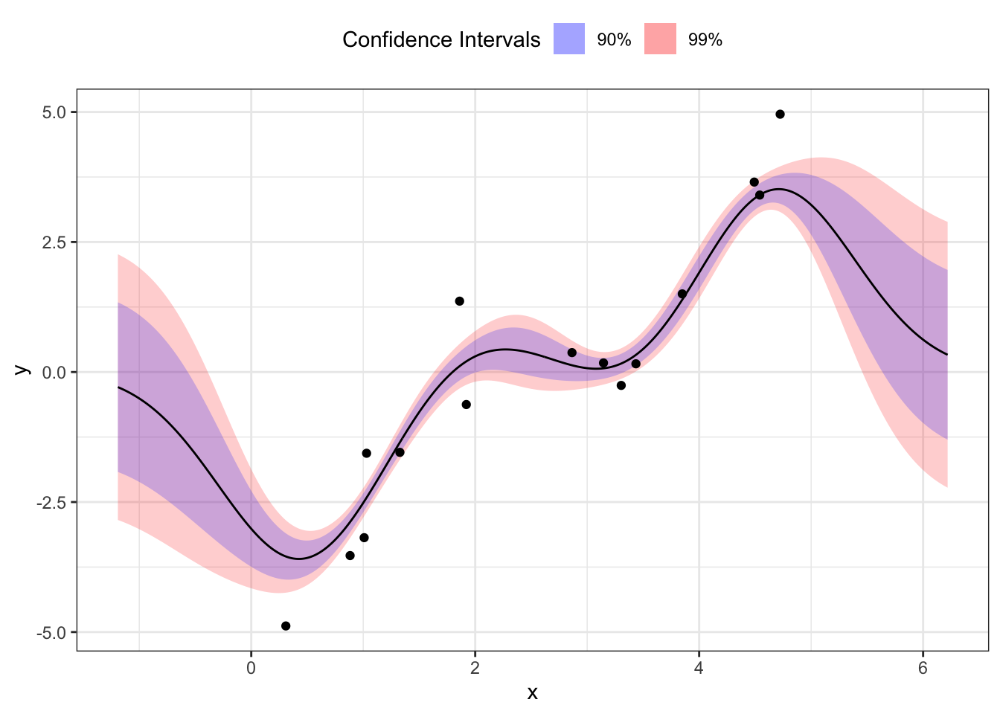
The benefits of the Gaussian Process Regression are clear: We don’t need to specify features and in contrast to Bayesian Linear Regression, the predictions for \(x_\star\) that are outside of the region where we have training data, don’t diverge but go towards 0.
But it seems like this approach needs centered data. Otherwise and with a too large \(\sigma\), the fitted line does not even reach the data but stays near zero.
The hyperparameter \(\sigma\) is very sensitive here and wrong values can easily lead to nonsensical results:
sigma <- .1
gaussian_kernel <- function(x1, x2) {
exp(-sum((x1 - x2)^2) / (2 * sigma^2))
}
K_X_X <- matrix(0, nrow = n, ncol = n)
for (i in 1:n) {
for (j in 1:n) {
K_X_X[i, j] <- gaussian_kernel(data$x[i], data$x[j])
}
}
K_X_X_inv <- solve(sigma^2 * diag(n) + K_X_X)
x_seq <- seq(min(data$x)-1.5, max(data$x)+1.5, by = 0.01)
Mu_star <- vector(length = length(x_seq))
Sigma_star <- vector(length = length(x_seq))
for(k in 1:length(x_seq)){
x_star <- x_seq[k]
K_X_xstar <- matrix(0, nrow = n, ncol = 1)
for(i in 1:n){
K_X_xstar[i] <- gaussian_kernel(data$x[i], x_star)
}
K_xstar_xstar <- gaussian_kernel(x_star, x_star)
mu_star <- t(K_X_xstar) %*% K_X_X_inv %*% data$y
sigma_star <- K_xstar_xstar - t(K_X_xstar) %*% K_X_X_inv %*% K_X_xstar
Mu_star[k] <- mu_star
Sigma_star[k] <- sigma_star
}
p1 <- data.frame("x_star" = x_seq, "mu_star" = Mu_star, "sigma_star" = Sigma_star) %>%
mutate(conf_interval_90 = qnorm(0.95, mean = 0, sd = sigma_star),
conf_interval_99 = qnorm(0.995, mean = 0, sd = sigma_star)) %>%
ggplot()+
geom_ribbon(aes(x = x_star, ymin = mu_star-conf_interval_99, ymax = mu_star+conf_interval_99), alpha = 0.2, fill = "red")+
geom_ribbon(aes(x = x_star, ymin = mu_star-conf_interval_90, ymax = mu_star+conf_interval_90), alpha = 0.2, fill = "blue")+
geom_line(aes(x = x_star, y = mu_star))+
geom_point(data = data, aes(x = x, y = y))+
scale_fill_manual(values = c("90" = "blue", "99" = "red"),
labels = c("90%", "99%"))+
theme_bw()+
#coord_cartesian(ylim = c(min(data$y)-5, max(data$y)+5))+
theme(legend.position = "top")+
labs(fill = "Confidence Intervals",
x = "x",
y = "y",
subtitle = paste("σ = ", sigma, sep = ""))
######################
sigma <- 10
gaussian_kernel <- function(x1, x2) {
exp(-sum((x1 - x2)^2) / (2 * sigma^2))
}
K_X_X <- matrix(0, nrow = n, ncol = n)
for (i in 1:n) {
for (j in 1:n) {
K_X_X[i, j] <- gaussian_kernel(data$x[i], data$x[j])
}
}
K_X_X_inv <- solve(sigma^2 * diag(n) + K_X_X)
x_seq <- seq(min(data$x)-1.5, max(data$x)+1.5, by = 0.01)
Mu_star <- vector(length = length(x_seq))
Sigma_star <- vector(length = length(x_seq))
for(k in 1:length(x_seq)){
x_star <- x_seq[k]
K_X_xstar <- matrix(0, nrow = n, ncol = 1)
for(i in 1:n){
K_X_xstar[i] <- gaussian_kernel(data$x[i], x_star)
}
K_xstar_xstar <- gaussian_kernel(x_star, x_star)
mu_star <- t(K_X_xstar) %*% K_X_X_inv %*% data$y
sigma_star <- K_xstar_xstar - t(K_X_xstar) %*% K_X_X_inv %*% K_X_xstar
Mu_star[k] <- mu_star
Sigma_star[k] <- sigma_star
}
p2 <- data.frame("x_star" = x_seq, "mu_star" = Mu_star, "sigma_star" = Sigma_star) %>%
mutate(conf_interval_90 = qnorm(0.95, mean = 0, sd = sigma_star),
conf_interval_99 = qnorm(0.995, mean = 0, sd = sigma_star)) %>%
ggplot()+
geom_ribbon(aes(x = x_star, ymin = mu_star-conf_interval_99, ymax = mu_star+conf_interval_99), alpha = 0.2, fill = "red")+
geom_ribbon(aes(x = x_star, ymin = mu_star-conf_interval_90, ymax = mu_star+conf_interval_90), alpha = 0.2, fill = "blue")+
geom_line(aes(x = x_star, y = mu_star))+
geom_point(data = data, aes(x = x, y = y))+
scale_fill_manual(values = c("90" = "blue", "99" = "red"),
labels = c("90%", "99%"))+
theme_bw()+
#coord_cartesian(ylim = c(min(data$y)-5, max(data$y)+5))+
theme(legend.position = "top")+
labs(fill = "Confidence Intervals",
x = "x",
y = "y",
subtitle = paste("σ = ", sigma, sep = ""))
####################
ggarrange(p1, p2, nrow = 1)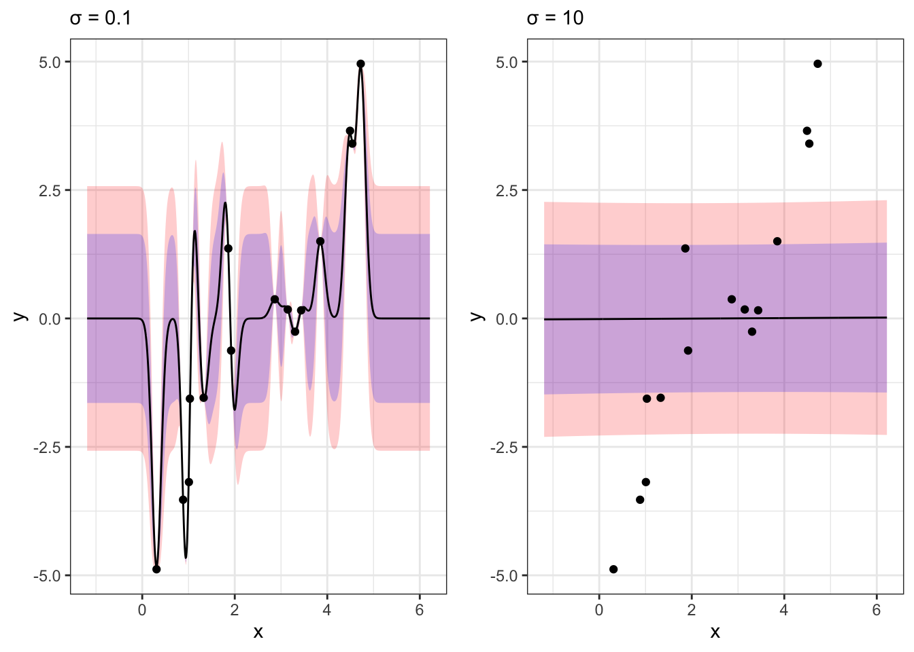
For \(\sigma\) values too small, the model shows massive overfitting and for large \(\sigma\)s, we can see extreme underfitting.
Another problem of this other kernel methods is scaling with larger datasets, because we need to invert the \(\mathbf{K}(\mathbf{X}, \mathbf{X}) \in \mathbb{R}^{N \times N}\) matrix. This works only up to around 50 thousand datapoints at the extreme. Normal computer will already struggle with a few thousend datapoints. Bayesian linear regression does not have this problem, because there the largest inversion is of \(\mathbf{\Phi}^T \mathbf{\Phi} \in \mathbb{R}^{D \times D}\) where \(D\) is the number of features. This runs much, much faster. This problem of (not) scaling is one reason for the rise of neural networks, which can deal with much larger dataset sizes.
Latent variables are ones that we don’t observe. This could be the class an object truly belongs to (clustering) or the desire to buy something, when we only observe the final decision (logistic regression).
Our goal for linear dimensionality reduction is to find a mapping \(\mathbf{x}_n \rightarrow \mathbf{z}_n\), where \(\mathbf{x}_n\) is the original data point with a high dimension \(D\) and \(\mathbf{z}_n\) is a low dimensional representation of \(\mathbf{x}_n\) with dimension \(M \ll D\). This mapping should be a linear function \(\mathbf{z}_n = \mathbf{B}\mathbf{x}_n\) with \(\mathbf{B} \in \mathbb{R}^{M \times D}\).
Note on notation:
Here, we write \(\mathbf{X} = \begin{bmatrix} \mathbf{x}_1 & \cdots & \mathbf{x}_N \end{bmatrix} \in \mathbb{R}^{D \times N}\) again. So one column for each datapoint.
In the projection or mapping, we want to keep as much of the variation in the data as possible. We then find the variance and mean of the projection as \[ \begin{align*} \bar{z} &= \mathbf{u}^T\mathbf{\mu} \\ \sigma^2 &= \mathbf{u}^T\mathbf{C}\mathbf{u} \qquad \text{with}\ \mathbf{C} = \frac{1}{N}\mathbf{X}\mathbf{X}^T \end{align*} \] where \(\mathbf{C}\) is the covariance matrix of the data. The first principal direction \(\mathbf{u}_1\) is the direction along which the data variance is maximal. The second principal direction then maximizes the variance of the data in the orthogonal complement of the first principal direction.
This maximization problem can be written as \[ \mathbf{u}_1 = \underset{\mathbf{u}}{\arg\max}\ \mathbf{u}^T\mathbf{C}\mathbf{u} \qquad \text{s.t.}\ \mathbf{u}^T\mathbf{u}=1 \] \(\mathbf{u}^T\mathbf{u}=1\) is the restriction that \(\mathbf{u}\) has to be a unit vector.
We then find that we just need to compute the Eigenvectors and Eigenvalues of the data’s covariance matrix \(\mathbf{C}\). Then we choose the first \(M\) (for example 2 for a 2d plot) Eigenvectors based on the size of the Eigenvalues.
In the following example, we again use the iris dataset with it’s 4 dimensions (excluding the labels).
iris <- read_csv("https://gist.githubusercontent.com/netj/8836201/raw/6f9306ad21398ea43cba4f7d537619d0e07d5ae3/iris.csv")
# Standarize data by mean centering and setting variances to 1
iris_prepped <- iris %>%
select(1:4) %>%
scale()
# Calculating covariance matrix and eigenvectors/values
iris_cov <- 1/nrow(iris_prepped) * t(iris_prepped) %*% iris_prepped
iris_eigenvalues <- eigen(iris_cov)$values
iris_eigenvectors <- eigen(iris_cov)$vectors # already ordered
# Projecting data
iris_PC <- iris_prepped %*% iris_eigenvectors[, 1:2]
iris_PC %>%
data.frame() %>%
rename("PC1" = 1, "PC2" = 2) %>%
cbind(variety = iris$variety) %>%
ggplot(aes(x = PC1, y = PC2, color = variety))+
geom_point()+
theme_bw()+
theme(legend.position = "top")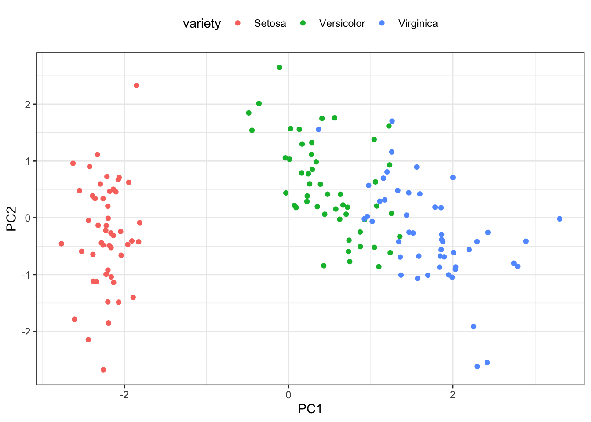
One more example using data from Spotify. I created a playlist with songs from 3 different genres: Hip Hop, Rock and Classical. Spotify gives us many different features for each song, such as danceability, speechiness or duration. We use 12 of these features, so our data is 12-dimensional. Let’s see if we can see a difference between the three genres.
music_complete <- read_csv("data/music_export.csv")
music_labels <- music_complete %>%
select(genre)
music <- music_complete %>%
select(danceability:tempo, track.duration_ms) %>%
scale()
music_cov <- cov(music)
music_eigenvalues <- eigen(music_cov)$values
music_eigenvectors <- eigen(music_cov)$vectors
music_PC <- music %*% music_eigenvectors[, 1:2]
data.frame(music_PC, music_labels) %>%
rename("PC1" = 1, "PC2" = 2) %>%
ggplot(aes(x = PC1, y = PC2, color = genre))+
geom_point()+
theme_bw()+
theme(legend.position = "top")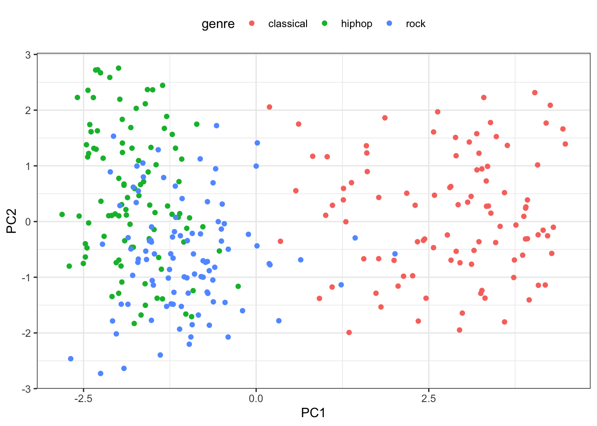
We can definetly see how classical music is different from hip hop and rock. But they on the other hand seem rather similar. Taking a closer look at the eigenvectors, we can see that energy (scaled by -0.42) makes up the largest part of the first principal component. So songs that have a low PC1 value are higher in energy. This makes sense when comparing classical music to hip hop.
We can also check what percentage of the variance is explained by two principal components using a scree plot. For that, we divide the eigenvalues by the sum of the eigenvalues, to get the percentage of variacne explained.
variance_explained <- music_eigenvalues/sum(music_eigenvalues)
cumulative_variance <- cumsum(variance_explained)
scree <- data.frame(Principal_Component = 1:length(music_eigenvalues),
Variance_Explained = variance_explained,
Cumulative_Variance = cumulative_variance)
ggplot(scree, aes(x = Principal_Component)) +
geom_line(aes(y = Variance_Explained, color = "variance")) +
geom_line(aes(y = Cumulative_Variance, color = "cum_variance"))+
scale_x_continuous(breaks = 1:nrow(scree))+
labs(y = "Variance Explained", x = "Principal Component")+
theme_bw()+
scale_color_manual(values = c("variance" = "blue", "cum_variance" = "red"),
labels = c("Cumulative Variance Explained", "Variance Explained"),
guide = guide_legend(title = ""))+
theme(legend.position = "top")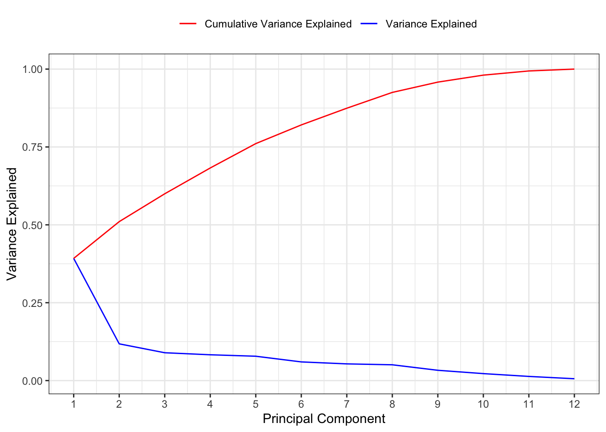
As we can see, using two principal components only keeps around 50% of the data’s variance or information. So it’s not a big surprise anymore that we cannot sepearate the genres very well.
This chapter is very similar to this one on EM-Clustering.
The EM (Expectation-Maximization) algorithm is a two-step iterative process used for finding maximum likelihood estimates of parameters in statistical models when the model depends on unobserved latent variables.
The E-step, or Expectation step, calculates the expected value of the log likelihood function, with respect to the conditional distribution of the latent variables given the observed data under the current estimates of the parameters. In the context of Gaussian mixture models, this step computes the “responsibilities” that each Gaussian component takes for each data point. The responsibility of a component for a particular data point is the probability that the data point was generated by that component.
The M-step, or Maximization step, updates the parameters to maximize the expected log-likelihood found on the E step. The parameters are updated in a way that they maximize the “completeness” of the data. In the context of Gaussian mixture models, this step re-estimates the parameters (mean, covariance matrix and mixing weights) of the Gaussian components based on the responsibilities computed in the E-step. This is done so as to make the Gaussian components align better with the data points for which they have taken responsibility.
The E-step and M-step are repeated iteratively until the algorithm converges, meaning that the parameters do not change significantly from one iteration to the next.
The EM algorithm can be used to perfom image segmentation. Here’s an example using a 128x128 picture.
# Loading and plotting image
img <- readJPEG("./pictures/cropped.jpg")
# Convert the image to a data frame and normalize the values
img_data <- data.frame(
r = as.vector(img[,,1]),
g = as.vector(img[,,2]),
b = as.vector(img[,,3])
)
img_data %>%
mutate(y = rep(1:128, times = 128),
x = rep(1:128, each = 128)) %>%
ggplot(aes(x = x, y = -y, fill = rgb(r, g, b)))+
geom_raster()+
scale_fill_identity()+
theme_minimal()+
coord_fixed()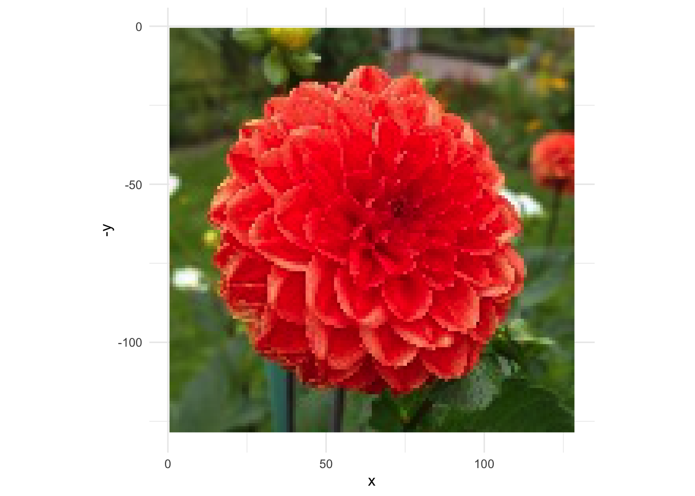
set.seed(1)
# Convert img_data to a matrix
img_data_mat <- as.matrix(img_data)
# Define number of clusters
n_cluster <- 3
# Initialize parameters
mu <- array(runif(n_cluster * 3), dim = c(n_cluster, 3))
sigma <- array(diag(runif(3), 3, 3), dim = c(3, 3, n_cluster))
pi <- rep(1/n_cluster, n_cluster)
# EM algorithm
for(i in 1:30) {
# E-step: calculate responsibilities
resp <- sapply(1:n_cluster, function(k) pi[k] * dmvnorm(img_data_mat, mean = mu[k, ], sigma = sigma[,,k]))
resp <- sweep(resp, 1, rowSums(resp), "/")
# M-step: re-estimate parameters
for(k in 1:n_cluster) {
mu[k, ] <- colSums(resp[,k] * img_data_mat) / sum(resp[,k])
sigma[,,k] <- t(sqrt(resp[,k]) * sweep(img_data_mat, 2, mu[k, ])) %*% (sqrt(resp[,k]) * sweep(img_data_mat, 2, mu[k, ])) / sum(resp[,k])
pi[k] <- mean(resp[,k])
}
}
# Get segmentation by assigning each pixel to the component with the highest responsibility
segmentation <- apply(resp, 1, which.max)
img_data %>%
mutate(y = rep(1:128, times = 128),
x = rep(1:128, each = 128)) %>%
cbind(segmentation) %>%
ggplot(aes(x = x, y = -y, fill = segmentation))+
geom_raster()+
#scale_fill_identity()+
theme_minimal()+
coord_fixed()+
theme(legend.position = "none")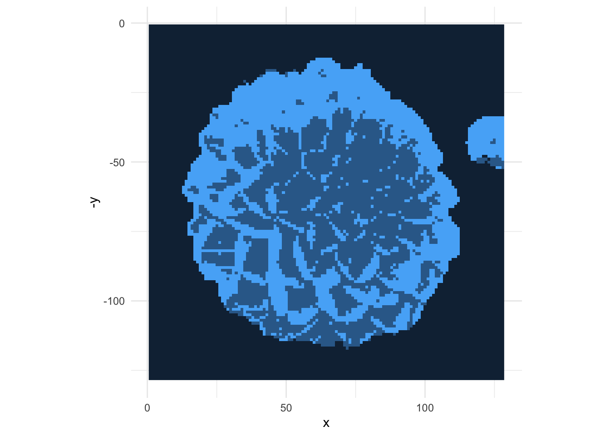